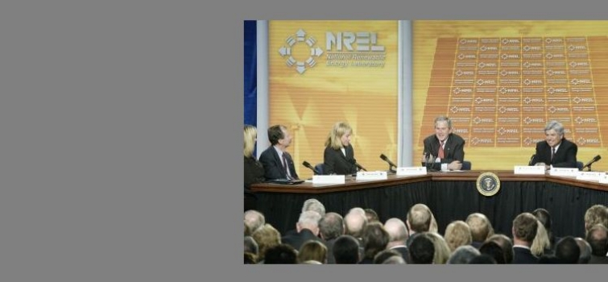
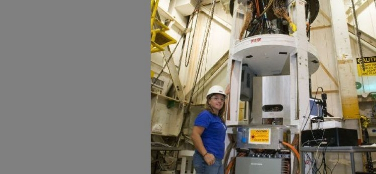
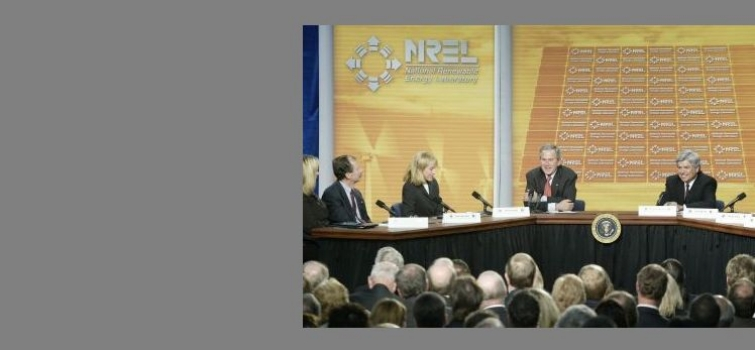

-

The Department's Sandia National Laboratories announces that its Z machine has produced plasmas that exceed temperatures of 2 billion degrees Kelvin-hotter than the interiors of stars.
- 
President Bush, in a visit to DOE's National Renewable Energy Laboratory in Golden, Colorado, participates in an energy conservation and efficiency panel.
- 
The Department's Los Alamos National Laboratory successfully conducts a subcritical experiment, Unicorn, at 11:00 a.m. at the Nevada Test Site.
- 
Return to Timeline of Events: 2005
Continue to Timeline of Events: 2007
Jump to month: February | March | April | May | June | July | August | September | October | November | December
January 1, 2006
The energy efficiency tax credits signed into law by President Bush go into effect, making it easier for American families and businesses to reduce energy costs at home, work, and on the road. Various tax credits are available for the purchase and installation of energy efficient appliances and products, as well as the purchase of fuel efficient vehicles such as hybrids. "While there are easy, immediate steps that families can take to reduce their energy bills-like turning down the thermostat or weather stripping doors and windows-these tax credits will help with the purchase of bigger ticket items," says Secretary Bodman. The energy efficiency tax credits will allow consumers to reduce their 2006 tax bills on a dollar-for-dollar basis up to the amount allowed under the law.
January 3, 2006
The Department announces that it is seeking comments on a draft Request for Proposals (RFP) for the competitive selection of a management and operating (M&O) contractor for Argonne National Laboratory.
January 4, 2006
The Department announces that it has signed a contract to significantly improve energy efficiency at its Pantex Plant near Amarillo, Texas, that will result in an estimated savings of over $2 million per year. Under the contract, NORESCO, an energy services company will oversee the improvements through an energy savings performance contract (ESPC).
January 4, 2006
The Department's Los Alamos National Laboratory announces that lab scientists have discovered that a phenomenon called carrier multiplication, in which semiconductor nanocrystals respond to photons by producing multiple electrons, is applicable to a broader array of materials that previously thought. The discovery increases the potential for the use of nanoscrystals as solar cell materials to produce higher electrical outputs than current solar cells.
January 6, 2006
Secretary Bodman attends the Pittsburgh Energy Summit 2006 to discuss how communities and companies fuel Pittsburgh's economy and how the Energy Policy Act of 2005 will impact jobs and the economy of Pennsylvania. In a panel discussion, the Secretary highlights the energy efficiency tax credits made available January 1, 2006. "Over the past year, America's economy has seen steady growth, even in the wake of hurricanes and higher gas prices." says Secretary Bodman. "One of the best ways to maintain this prosperity is by using our resources more efficiently and limiting America's energy demand." Following the summit, Secretary Bodman tours DOE's National Energy Technology Lab (NETL) in Pittsburgh and holds an all-hands meeting with NETL employees.
January 9, 2006
Secretary Bodman announces that DOE and the State of Washington have entered into a settlement agreement that will lead to a final order and the dismissal of the challenge to Hanford's Solid Waste Environmental Impact Statement (EIS) in the lawsuit Washington v. Bodman. DOE, with Washington State as a cooperating agency, will prepare a new EIS that will include updated, site-wide groundwater analysis. In 2003, the state initiated litigation on issues related to the importation, treatment, and disposal of radioactive and hazardous waste generated off-site as a result of nuclear defense and research activities. In 2004, DOE issued the Hanford Solid Waste EIS, which evaluated potential environmental impacts of the storage, treatment and disposal of low-level, mixed-low level and transuranic waste at the Hanford Site. Washington amended its lawsuit to challenge the adequacy of this EIS. In July 2005, as part of the discovery process related to the 2003 lawsuit, DOE was informed by its support contractor, Battelle Memorial Institute, of discrepancies in the EIS data related to the impacts of waste disposal on Hanford's groundwater. The settlement agreement outlines DOE's plans for resolving the data quality issues identified.
January 9, 2006
The Department's Oak Ridge National Laboratory announces the new Center for Radiation Detection Materials and Systems to consolidate and expand the lab's research and development efforts in radiation detection technologies.
January 9, 2006
A delegation of ten high-level Chinese officials attends a civilian nuclear power workshop at DOE's Idaho National Laboratory. The workshop is designed to explore technical areas of mutual interest and to set the framework for a cooperative program addressing identified technical issues.
January 10, 2006
The Department's Joint Genome Institute (JGI) releases a progress report (pdf) for the years 2002 to 2005. The JGI, supported by DOE's Office of Science, unites the expertise of five national laboratories, Lawrence Berkeley, Lawrence Livermore, Los Alamos, Oak Ridge, and Pacific Northwest, along with the Stanford Human Genome Center, to advance genomics in support of the DOE mission related to clean energy generation and environmental characterization and clean-up.
January 11, 2006
Secretary Bodman begins a two day visit to Australia where he leads the U.S. delegation to the inaugural meeting of the Asia-Pacific Partnership for Clean Development and Climate (APP). The APP brings together governments and private sector entities from Australia, China, India, Japan, South Korea and the U.S. to encourage the deployment of clean energy technologies and international cooperation in eight areas: cleaner fossil energy; renewable and distributed generation; power generation and transmission; aluminum; steel; cement; buildings and appliances; and mining. "The governments and private sectors of the APP countries have the historic opportunity to leverage the ingenuity of the private sector, the power of markets and the strength of the public sector to achieve a more secure energy future, a cleaner environment and greater prosperity in our own countries and around the world," Secretary Bodman says.
January 11, 2006
The Department's Pacific Northwest National Laboratory (PNNL) announces the launch of the Pacific Northwest GridWise Demonstration projects, a regional initiative to test and speed adoption of new smart grid technologies that can make the power grid more resilient and efficient. Through the projects, PNNL researchers will gain insight into energy consumers' behavior while testing new technologies designed to bring the electric transmission system into the information age. About 300 volunteers on Washington's Olympic Peninsula, in Yakima, Washington, and in Gresham, Oregon, will test equipment that is expected to make the grid more reliable, while offsetting huge investments in new transmission and distribution equipment.
January 12, 2006
The U.S. and India conclude a four-day workshop on civilian nuclear energy, building on the U.S.-India Energy Dialogue initiated by President Bush and Indian Prime Minister Manmohan Singh in September 2004 and launched by Secretary Bodman and India Deputy Chairman of Planning Commission Dr. Montek Singh Ahluwalia in May 2005. India hosts the first workshop of the Civil Nuclear Working group, which takes place in Mumbai. The workshop affords the two countries the opportunity to convene experts to initiate discussions and share information on the global demand for nuclear energy today and in the future; on safety, emergency response, security, physical protection, and current practices for safeguarding nuclear facilities; on production and use of medical isotopes; and on research in such areas as fusion energy, high energy physics, and nuclear physics. R. Shane Johnson, acting director of DOE's Office of Nuclear Energy, Science and Technology represents the U.S. at the workshop.
January 12, 2006
Secretary Bodman announces that President Bush will request $52 million in the upcoming Fiscal Year 2007 budget to support the efforts of the Asia Pacific Partnership on Clean Development and Climate. The Partnership will focus on developing and commercializing cutting-edge technologies capable of effecting substantial reductions in greenhouse gas emissions. "The greatest progress in addressing climate change will come through a cooperative effort that combines the best strategies of our governments with the technical know-how of the private sector," the Secretary says.
January 16, 2006
The U.S. Departments of Agriculture (USDA) and Energy announce they will share resources and coordinate the study of plant and microbial genomics, and the DOE will tackle the sequencing of the soybean genome as the first project resulting from the agreement. USDA and DOE will establish a framework to cooperate and coordinate agency-relevant plant and microbial genome sequencing and bioinformatics that can serve the needs of the broader scientific community and solve problems that are important to each agency's mission. This agreement could help speed the deployment of emerging technologies, such as improved methods of gene identification and sequence assembly. The DOE Joint Genome Institute (DOE JGI) will sequence the genome (decode the DNA) of the soybean, the world's most valuable legume crop. Soybean is of particular interest to DOE because it is the principal source of biodiesel, a renewable, alternative fuel.
January 18, 2006
The Department's Office of Civilian Radioactive Waste Management designates Sandia National Laboratories as its lead laboratory to integrate repository science work for the Yucca Mountain Project.
January 18, 2006
The DOE's Atmospheric Radiation Measurement (ARM) Program places a new, portable atmospheric laboratory with sophisticated instruments and data systems in Niger, Africa, to gain a better understanding of the potential impacts of Saharan dust on global climate.
January 18, 2006
The Department issues the waste determination for the treatment and stabilization of low activity salt-waste at the Savannah River Site allowing for significant reductions in environmental and health risks posed by the material. Stored in forty-nine underground tanks, approximately 36 million gallons of radioactive waste is left over from plutonium production during the Cold War. In addition, DOE issues an amended Record of Decision and Implementation Plan to the Defense Nuclear Facilities Safety Board.
January 19, 2006
The New Horizons spacecraft, powered by deep space battery technology developed by DOE's national laboratories successfully launches from Florida's Kennedy Space Center on a 9-1/2 year journey to explore Pluto and its moons. The spacecraft will receive heat and electricity from a long-lasting plutonium-238 powered generator developed and assembled by scientists and engineers at the Idaho, Oak Ridge and Los Alamos National Laboratories. "This technology is a tremendous example of how DOE's national laboratories are helping to significantly expand scientific research and discovery," says Secretary Bodman. Each laboratory played an integral role in the development, assembly and testing of a radioisotope thermoelectric generator or "RTG"-a power system or "space battery" that provides an uninterrupted and reliable source of heat and electricity in remote and harsh environments such as deep space.
January 20, 2006
Secretary Bodman announces three initiatives to help the people in the Gulf coast region recover from the hurricanes in 2005, as well as prevent loss of life and damage in the future. During his speech to the Energy Leadership Forum, the Secretary says that DOE will donate 400,000 hours of supercomputing time at its National Energy Research Scientific Computing Center (NERSC) to the U.S. Army Corps of Engineers. This will allow the Corps to run hurricane simulations to help model hurricane-induced storm surge elevations so coastal levees can be strengthened and offer more protection to low-lying areas. DOE is also offering hurricane-affected residents free rebuilding workshops providing expert advice on the latest energy-efficient products and techniques. In addition, DOE will donate 200 pieces of furniture to Belle Chasse High School in Belle Chasse, Louisiana.
January 20, 2006
Secretary Bodman approves an emergency loan of 871,000 barrels of crude oil from the Strategic Petroleum Reserve (SPR) to the Total Petrochemicals USA, Inc. refinery in Port Arthur, Texas. This loan comes in response to a barge accident in the Sabine Neches Ship Channel earlier in the week, during which 94 concrete pilings dropped from the barge into the channel. In order to ensure that this accident does not put a strain on U.S. supplies of refined products, the delivery of crude oil from the West Hackberry SPR site will begin tomorrow. "The Strategic Petroleum Reserve is a national asset that can be used in times of supply disruption," the Secretary says. "In providing this loan, the SPR is doing exactly what it was intended to do-mitigate any supply disruption and minimize, to the extent possible, the effect any disruption would have on the American people."
January 23, 2006
New manufacturing standards issued by DOE to increase the energy efficiency of residential air conditioners for products manufactured in, or imported into, the U.S. go into effect. Residential air conditioner systems (not window box air conditioners), manufactured after January 23, 2006, must achieve a Seasonal Energy Efficiency Ratio (SEER) of 13 or higher. A SEER rating of 13 is 30 percent more efficient than the current 10 SEER standard. The 13 SEER central air conditioner standard is predicted to save the nation 4.2 quads (quadrillion British Thermal Units) of energy over the next 25 years. This is equivalent to the energy consumed by nearly 26 million American households annually. The standard is expected to save consumers $1 billion over the same period.
January 24, 2006
Secretary Bodman kicks off the Washington Auto Show with the announcement of $119 million in funding and a research "roadmap" aimed at identifying and overcoming the technical and manufacturing challenges associated with the further development of commercially available hydrogen fuel cell vehicles. "Investments in fuel cell and hydrogen research today will enable America to lead the world in developing clean, hydrogen-powered automobiles that will reduce our dependence on imported oil," says the Secretary. DOE's Roadmap on Manufacturing R&D for the Hydrogen Economy (pdf) addresses challenges to manufacturing, storage and production of fuel cell technologies and proposes R&D solutions to overcome such challenges, focusing primarily on near commercial technologies.
January 26, 2006
Scientists supported by the DOE's Atmospheric Radiation Measurement (ARM) program report that enhanced aerosol concentrations originating from industrial regions to the south increase the amount of thermal energy emitted to the ground surface by many Arctic clouds. "Its contribution to the surface warming," noted the researchers, "is comparable to that by the so-called greenhouse effect."
January 27, 2006
The Department's Argonne National Laboratory announces that researchers at its Structural Biology Center have contributed their 1,000th structure to the Protein Data Bank-more than any other lab has contributed. The data bank houses the molecular structures of all proteins characterized so far and makes them available to researchers worldwide to study. The structures provide important pieces to the puzzle of understanding human and environmental health by imaging the molecules that control and regulate it.
January 31, 2006
President Bush, in his State of the Union address, outlines the Advanced Energy Initiative to help break America's dependence on foreign sources of energy. The President sets a national goal of replacing more than 75% of our oil imports from the Middle East by 2025. The Advanced Energy Initiative provides for a 22% increase in clean-energy research at DOE and will accelerate breakthroughs in two vital areas: powering homes and businesses and powering automobiles. The Bush Administration will work to diversify energy sources, accelerating research in clean coal technologies, clean and safe nuclear energy, and revolutionary solar and wind technologies. Specifically, the initiative commits $2 billion over 10 years to speed up research in the use of clean coal technologies; includes $54 million for the FutureGen initiative; proposes a $148 million Solar America Initiative to accelerate the development of semiconductor materials that convert sunlight directly to electricity; and includes $44 million for wind energy research. Additionally, the President wants to accelerate the development of domestic, renewable alternatives to gasoline and diesel fuels. The initiative includes $150 million to help develop bio-based transportation fuels from agricultural waste products, such as wood chips, stalks, or switch grass; includes $30 million to speed up the development of this battery technology and extend the range of these vehicles; and includes a $1.2 billion Hydrogen Fuel Initiative to develop technology for commercially viable hydrogen-powered fuel cells.
Top of page
February 1, 2006
Secretary Bodman attends a press briefing at the White House in which he responds to questions about the Advanced Energy Initiative announced by President Bush in the State of the Union address. He describes the initiative as a means of "improv[ing] the security of our country by broadening the availability, the domestic availability of motor fuels and, therefore, lessening the reliance on foreign producers."
February 1, 2006
The Department's Office of Science awards a total of 18.2 million hours of computing time on some of the world's most powerful supercomputers to help researchers in government labs, universities, and industry working on projects ranging from designing more efficient engines to better understanding Parkinson's disease. The allocations of computing time are made under DOE's Innovative and Novel Computational Impact on Theory and Experiment (INCITE) program, now in its third year of providing resources to computationally intensive research projects in the national interest.
February 1, 2006
The Department releases a schedule for setting new appliance efficiency standards. The five-year plan outlines how DOE will work with all of its partners to address the appliance standards rulemaking backlog and meet all of the statutory requirements established in the Energy Policy and Conservation Act and the Energy Policy Act of 2005.
February 1, 2006
The Department announces (pdf) that the U.S. project office for ITER, a major international fusion experiment, is relocating from DOE's Princeton Plasma Physics Laboratory (PPPL) to DOE's Oak Ridge National Laboratory (ORNL). The centralized project office, a partnership between PPPL and ORNL since July 2004, is moving to ORNL so that the U.S. ITER program can take better advantage of the project management experience developed by ORNL during the construction there of the Spallation Neutron Source.
February 2, 2006
Secretary Bodman announces regulations aimed at improving worker safety across the DOE complex. This rule establishes a uniform set of standards requiring department-wide compliance and monetary fines for contractors who fail to apply these regulations.
February 2, 2006
Secretary Bodman announces that the Fiscal Year 2007 budget requests $4.1 billion for the DOE's Office of Science, a $505 million (14.1%) increase over FY 2006 funding. This budget puts the Office of Science on the path to doubling its budget by FY 2016.
February 3, 2006
The Department announces the selection of 12 projects aimed at reducing mercury emissions from coal-fired power plants. The projects' overall focus is on field-testing advanced post-combustion mercury control technologies that achieve at least 90 percent mercury removal with a cost reduction of 50 percent or more. DOE will cost-share with industry partners in this collaborative effort valued at more than $29 million.
February 6, 2006
Secretary Bodman unveils the Fiscal Year 2007 budget proposal. At $23.6 billion, the Department's FY 2007 budget is $211 million more than the FY 2006 appropriation. Of DOE's four "business lines," the National Nuclear Security Administration is $9.316 billion, a $211 million or 2.3 percent increase above the FY 2006 appropriation; for energy activities, the FY 2006 budget request at $2.583 billion is down $130 million or 4.8 percent compared to the FY 2006 appropriation; funding for the Office of Science is $4.102 billion, up $505 million or 14.1 percent; environment programs are $6.574 billion, down $590 million or 8.2 percent. Fossil energy at $649 million is down 22.9 percent from the FY 2006 appropriation while nuclear energy at $633 million is up 18.1 percent. Considerable funding increases are in the budget for hydrogen technology, fuel cell technology, vehicle technology, biomass, solar, and wind research programs. "This budget signifies an investment in our future," Secretary Bodman says. "Continued support for scientific discovery and the development of alternative energy sources is vital to America's energy and economic security."
February 6, 2006
As part of President Bush's Advanced Energy Initiative, Secretary Bodman announces a $250 million Fiscal Year 2007 request to launch the Global Nuclear Energy Partnership (GNEP). This new initiative is a comprehensive strategy to enable the expansion of emissions-free nuclear energy worldwide by demonstrating and deploying new technologies to recycle nuclear fuel, minimize waste, and improve our ability to keep nuclear technologies and materials out of the hands of terrorists. "GNEP brings the promise of virtually limitless energy to emerging economies around the globe, in an environmentally friendly manner while reducing the threat of nuclear proliferation," Secretary Bodman says. The GNEP strategy includes seven elements: building of a new generation of nuclear power plants in the U.S., developing and deploying new nuclear recycling technologies, working to effectively manage and eventually store spent nuclear fuel in the U.S., designing Advance Burner Reactors that would produce energy from recycled nuclear fuel, establishing a fuel services program that would allow developing nations to acquire and use nuclear energy economically while minimizing the risk of nuclear proliferation, developing and constructing small scale reactors designed for the needs of developing countries, and improving nuclear safeguards to enhance the proliferation-resistance and safety of expanded nuclear power.
February 8, 2006
The FutureGen Industrial Alliance announces a site selection process to determine the host site for the world's first coal-fueled "zero emissions" power plant. A draft Request for Proposals (RFP) for public review will be issued on February 14, with a final RFP targeted for release in March 2006. Proposals for the host site will be due by May 2006.
February 9, 2006
Researchers at DOE's Brookhaven National Laboratory report that they have determined the structure of an experimental, organic compound-based circuit component, called a "molecular electronic junction," that is only a few nanometers in dimension. Scientists hope to incorporate this and other molecular-scale devices into a new generation of remarkably small electronics-based technologies.
February 13, 2006
The Department announces a new research effort aimed at maximizing U.S. oil and natural gas production while sequestering significant quantities of carbon dioxide (CO2). The new effort is being launched through a solicitation to fund research of up to $3 million per project for field-testing and validating integrated enhanced recovery/sequestration technologies. The projects will be managed through DOE's National Energy Technology Laboratory (NETL).
February 15, 2006
The Department announces a series of public education forums on liquefied natural gas (LNG). The Energy Policy Act of 2005 requires DOE to convene the LNG forums to provide public education and foster dialogue among federal officials, state and local officials, the general public, independent experts, and industry representatives. The purpose of the forums is to identify and develop best practices for addressing the issues and challenges associated with LNG imports. The forums will be held in regions in which LNG import facilities are under consideration. The first form will be held in Boston on March 10.
February 15, 2006
The Department's Brookhaven National Laboratory and Fermi National Accelerator Laboratory announce the successful completion of a test, in which they and other major computing centers participated, of the first truly worldwide grid computing infrastructure. In the months-long test, data was transferred around the world at a rate of up to one gigabyte per second. The test is a crucial step on the way to making data from the Large Hadron Collider, the world's largest scientific instrument, available to scientists worldwide when the accelerator begins operating in 2007 at CERN in Geneva, Switzerland.
February 16, 2006
The Department announces that it intends to seek competitive bids for the management and operations contract for the Pacific Northwest National Laboratory (PNNL), Richland, Washington. The current five-year contract expires September 30, 2007. Battelle Memorial Institute, a non-profit organization based in Columbus, Ohio, has managed the PNNL since its inception in 1965.
February 16, 2006
Secretary Bodman, in a meeting with Pacific Northwest Senators hosted by Senator Larry Craig (R-ID), commits to continue discussions with Pacific Northwest interests concerning the Bonneville Power Administration (BPA) debt prepayment proposal included in President Bush's FY 2007 budget request. The current proposal is substantially different from previous proposals to move to market-based pricing for BPA power. The Bush Administration's FY 2007 Budget Request provides that if BPA earns more than $500 million in annual net secondary revenues, the excess amount will be used to make early payments on its federal bond debt to the U.S. Treasury. This proposal would mean a modest rate increase for Bonneville customers in FY's 2008 and 2009. Bonneville customers could expect to benefit in the long-term through lower rates and improved access to capital to improve and upgrade critical infrastructure facilities.
February 16, 2006
As part of the ten-member Generation IV International Forum (GIF), the U.S. signs a sodium-cooled fast reactor systems arrangement with France and Japan, providing the framework for collaboration among these countries on the research and development of these advanced nuclear reactors. This arrangement will support the development of technologies associated with the U.S.-led Global Nuclear Energy Partnership (GNEP), announced by Secretary Bodman earlier this month. The first-of-its-kind arrangement was signed following a three-day meeting of the GIF Policy Group in Fukui, Japan.
February 17, 2006
The Department's Office of Civilian Radioactive Waste Management (OCRWM) releases a report, Evaluation of Technical Impact on the Yucca Mountain Project Technical Basis Resulting From Issues Raised by E-mails of Former Project Participants (pdf), confirming the technical soundness of infiltration modeling work performed by U.S. Geological Survey (USGS) employees. In March 2005, DOE disclosed e-mails between USGS employees that appeared to suggest that these employees had failed to follow certain quality assurance procedures during their work. The OCRWM report was developed to assess how issues raised by the e-mails may have impacted some of the scientific conclusions contributing to the Yucca Mountain Site Recommendation of 2002 and the Key Technical Agreements between DOE and NRC. The report found no impact on those conclusions. Although the report's findings indicate that the infiltration rate estimates are corroborated and consistent with other independently derived work, OCRWM will replace or supplement the infiltration modeling work, as needed, and will review or verify the supporting documentation.
February 17, 2006
The Department announces that Illinois Rural Electric Cooperative (IREC) will receive the 2005 Wind Cooperative of the Year Award. The utility was cited for its leadership, demonstrated success, and innovation in its wind power program. IREC, a member-owned utility in Winchester, IL, is the first co-op in the state to install a wind power project and serves more than 10,000 consumer/owners throughout 10 western-central IL counties. The 1.65-megawatt project was partially financed through federal and state funds and was completed in May 2005.
February 18, 2006
President Bush discusses the Global Nuclear Energy Partnership (GNEP) during his weekly radio address.
February 18, 2006
At the direction of Secretary Bodman, DOE transfers $5 million to the operating contractor for DOE's National Renewable Energy Laboratory (NREL) at Golden, Colorado. The NREL lab director will use these funds to immediately restore all of the jobs that were cut earlier this month due to budget shortfalls. President Bush's FY 2007 budget request seeks a 78 percent increase in solar energy research, a 65 percent increase in biomass research, and a 42 percent increase in hydrogen research-all core areas of research work done at NREL.
February 20, 2006
President Bush tours the Johnson Controls' Battery Technology Center in Glendale, Wisconsin, and the world's largest amorphous silicon thin-fill solar manufacturing plant in Auburn Hills, Michigan. The President discusses energy research and development, solar technology, and his energy initiatives, noting that "the role of the government at this point is to continue to spend research dollars, to help push technologies forward; is to get these technologies to be even more competitive in the marketplace."
February 20, 2006
President Bush, in a letter with accompanying documentation to the American public, details the Advanced Energy Initiative. "For the sake of our economic and national security," the President states, "we must reduce our dependence on foreign sources of energy - including on the natural gas that is a source of electricity for many American homes and the crude oil that supplies gasoline for our cars. To achieve this objective, we will take advantage of technology. My Advanced Energy Initiative provides for a 22-percent increase in funding for clean-energy technology research at the Department of Energy."
February 21, 2006
Secretary Bodman participates in Ask the White House, responding to questions about funding for alternative energy, expanding nuclear power in the U.S., the Advanced Energy Initiative, GNEP, ethanol fuel, hybrid vehicle tax credits, and hydrogen fuel.
February 21, 2006
Alaska Governor Frank Murkowski and Alaska North Slope natural gas producers reach an agreement on key provisions of a contract that will allow production of Alaska North Slope natural gas to move forward. Secretary Bodman responds by saying, "This is an important step in bringing substantial amounts of Alaska's natural gas to consumers in the lower-48 States, enhancing the diversity of supply that is a cornerstone of our nation's energy and economic security. We at the Department of Energy will work to diligently to carry out our responsibility as the interim Federal Project Coordinator and to administer the loan guarantee program that Congress has authorized for the Alaska Natural Gas Pipeline."
February 21, 2006
President Bush, in a visit to DOE's National Renewable Energy Laboratory in Golden, Colorado, participates in an energy conservation and efficiency panel. The President states that he is "fired up" about renewable energy and that his administration is "willing to work with both the public sector and private sector to make sure that we achieve breakthroughs."
February 22, 2006
Secretary Bodman, on a visit to DOE's Thomas Jefferson National Accelerator Facility, announces that President Bush's Fiscal Year 2007 budget request includes $7 million for the upgrade of the Continuous Electron Beam Accelerator Facility (CEBAF). The upgrade of CEBAF will enable the lab's scientists to explore the mechanism that confines particles that form together in the nucleus, called quarks. The Secretary also visits with students and teachers from the Newport News, Virginia, area who participate in the lab's highly successful Becoming Enthusiastic about Math and Science (BEAMS) educational program, designed to motivate at-risk middle-schoolers to continue learning about math and science.
February 22, 2006
Secretary Bodman, on a visit to the Archer Daniels Midland Ethanol plant in Decatur, Illinois, announces $160 million in cost-shared funding over three years to construct up to three biorefineries in the U.S. "This funding will support a much-needed step in the development of biofuels and renewable energy programs," Secretary Bodman says. "Partnerships with industry like these will lead to new innovation and discovery that will usher in an era of reduced dependence on foreign sources of oil, while strengthening our economy at home." The $160 million solicitation is part of President Bush's Biofuels Initiative which will lead to the use of non-food based biomass, such as agricultural waste, trees, forest residues, and perennial grasses in the production of transportation fuels, electricity, and other products. The goal of the solicitation is to demonstrate that commercial biorefineries can be profitable once initial construction costs are paid.
February 22, 2006
The Department awards $235 million to Southern Company, in partnership with the Orlando Utilities Commission and Kellogg, Brown and Root, to develop one of the cleanest coal-fired power plants in the world. The agreement launches the design, construction, and demonstration of an integrated gasification combined cycle (IGCC) power generation system that will produce 285 megawatts of electricity for the Orlando, Florida, area-which will power approximately 285,000 households-and is scheduled to begin operations in 2010. The project is one of four selected in October 2004 under the President's Clean Coal Power Initiative, a $2 billion, 10-year effort to advance technologies that can help meet the nation's growing demand for low-cost electricity while protecting the environment.
February 23, 2006
Secretary Bodman joins Representatives Jeb Bradley (NH-R) and Charles Bass (NH-R) to highlight President Bush's Solar America Initiative, during a visit to GT Solar Technologies in Merrimack, New Hampshire. The Solar America Initiative, a key component of President Bush's Advanced Energy Initiative, seeks to accelerate the widespread acceptance of clean solar energy technologies throughout the U.S. by 2015. "As our nation's economy grows we will need to find ways to diversify our energy mix, and solar is one promising way to do that," Secretary Bodman says. The goal of the Solar America Initiative is to generate enough solar energy by 2015 to provide 5-10 gigawatts of electricity, enough to power 1-2 million homes.
February 23, 2006
Secretary Bodman highlights President Bush's $1.2 billion, five-year commitment to the Hydrogen Fuel Initiative while visiting General Motors Fuel Cell Activities in western New York. "Developing hydrogen as a key energy source for automobiles is an important step in diversifying our nation's energy mix," Secretary Bodman says. "If we can fully implement the promise of hydrogen fuel cells, we can significantly reduce our reliance on foreign sources of oil within the next two decades."
February 23, 2006
The Department's Los Alamos National Laboratory and the Atomic Weapons Establishment of the United Kingdom conduct Krakatau, a joint subcritical experiment, at DOE's Nevada Test Site. The experiment provides data for maintaining the safety and reliability of each nation's nuclear weapons without having to conduct underground nuclear tests. Krakatau was the 22nd subcritical experiment to date.
February 27, 2006
The Department's National Nuclear Security Administration (NNSA) issues a Preliminary Notice of Violation (PNOV) to the Lawrence Livermore National Laboratory (LLNL) for nuclear safety violations associated with two operational events, and radiation protection and nuclear safety management deficiencies. The PNOV includes a proposed civil penalty of $588,500 for all of the violations; however, this penalty is waived by statute for LLNL.
Top of page
March 1, 2006
Secretary Bodman swears in Thomas P. D'Agostino as Deputy Administrator for Defense Programs in DOE's National Nuclear Security Administration (NNSA). Deputy Administrator D'Agostino will lead NNSA's weapons programs, which maintain the reliability of the nation's nuclear weapons stockpile.
March 2, 2006
President Bush announces that India will become the first country to participate on the government steering committee for DOE's FutureGen project-an initiative to build and operate the world's first coal-based power plant that removes and sequesters carbon dioxide (CO2) while it produces electricity and hydrogen. As a partner, the Indian government will contribute $10 million to the FutureGen Initiative, and Indian companies will also be invited to participate in the private sector segment. Secretary Bodman has invited government leaders of the multi-national Carbon Sequestration Leadership Forum (CSLF) to become active participants in the FutureGen project. The CSLF is a voluntary climate initiative that includes 20 nations and the European Commission. India is the first CSLF member to participate in FutureGen.
March 2, 2006
Secretary Bodman releases a report entitled North America-The Energy Picture II (pdf), which continues to show that North America is one of the world's most important regions for energy-producing about one-fourth of that global energy supply and consuming about one-third of the world's commercial energy. The report was created as a joint effort under the North American Energy Working Group of the trilateral Security and Prosperity Partnership represented by Canada, Mexico, and the U.S. "This impressive report demonstrates the strength and vitality of the North American energy system," the Secretary says. The report reflects a joint perspective of the national energy departments of the three countries and serves as a reference document for use by government, business and the public.
March 2, 2006
The Department announces more stringent energy efficient criteria for dishwashers carrying the ENERGY STAR® label that could save America families more than $26 million a year. The new ENERGY STAR® criteria will also bring tax credits for the production of energy efficient appliances to manufacturers under the Energy Policy Act of 2005 (EPAct 2005). Dishwashers that meet the new ENERGY STAR® criteria must be a minimum of 41 percent more efficient than federal energy efficiency standards.
March 3, 2006
The Department releases reports indicating that state-of-the-art enhanced oil recovery techniques could significantly increase recoverable oil resources of the U.S. in the future. According to the findings, 89 billion barrels or more could eventually be added to the current U.S. proven reserves of 21.4 billion barrels. "By using the proven technique of carbon sequestration, we get the double benefit of taking carbon dioxide out of air while getting more oil out of the earth," notes Secretary Bodman. Next-generation enhanced recovery with carbon dioxide was judged to be a "game-changer" in oil production, one capable of doubling recovery efficiency. In the longer term, multiple advances in technology and widespread sequestration of industrial carbon dioxide could eventually add as much as 430 billion new barrels to the technically recoverable resource. The findings are consolidated in the February 2006 report Undeveloped Domestic Oil Resources: The Foundation for Increasing Oil Production and a Viable Domestic Oil Industry.
March 6, 2006
Scientists from DOE's Brookhaven National Laboratory and collaborating institutions publish the first detailed reports on the biochemistry and structure of a protein-cleaving complex that is essential to the tuberculosis (TB) bacterium's survival. This could greatly improve prospects for developing specific proteasome-based anti-tuberculosis treatments.
March 7, 2006
The Department issues a Preliminary Notice of Violation (PNOV) to the University of Chicago, the Management and Operating contractor for DOE's Argonne National Laboratory, for nuclear safety violations identified through several safety reviews and inspections conducted by DOE. The PNOV includes a proposed civil penalty of $550,000 for the identified violations. This penalty, however, is waived by statute for the University.
March 8, 2006
The Department's Sandia National Laboratories announces that its Z machine has produced plasmas that exceed temperatures of 2 billion degrees Kelvin-hotter than the interiors of stars. The unexpectedly hot output, if its cause were understood and harnessed, could eventually mean that smaller, less costly nuclear fusion plants would produce the same amount of energy as larger plants. The phenomena also may explain how astrophysical entities like solar flares maintain their extreme temperatures.
March 8, 2006
The Department's Sandia National Laboratories/California celebrates its golden anniversary. The laboratory develops weapons systems and technology solutions that support the nation's nuclear deterrence policy.
March 9, 2006
The Department's National Renewable Energy Laboratory (NREL) in Golden, Colorado, signs a $27 million, multi-year contract with the General Electric Company to develop a new offshore wind power system over the next several years. Approximately $8 million of the offshore wind project will be cost-shared by DOE. The goal of the project is to design, fabricate, and test a multi-megawatt scale wind turbine which could produce electricity at a much-reduced cost. The wind turbine will be located offshore and is expected to produce electricity at a cost of five cents per kilowatt-hour, or 52% less than the current 9.5 cents per hour.
March 10, 2006
Secretary Bodman highlights America's robust economy and the role the energy sector plays to ensure its continued growth, while speaking to the Greater Kansas City Chamber of Commerce. During his remarks, the Secretary discusses the American Competitiveness and Advanced Energy Initiatives, announced by President Bush in the State of the Union address. "Secure, affordable supplies of energy are critical to the continued growth of our economy," the Secretary says. "The President's initiatives will help America maintain its economic leadership by diversifying our energy mix, making basic scientific research and education a priority for America's 21st-century workforce."
March 10, 2006
The Department's National Nuclear Security Administration (NNSA) and the Australian Radiation Protection and Nuclear Safety Agency (ARPANSA) agree to join forces to counter radiological threats-such as a "dirty bomb"-and respond to emergencies. The memorandum of understanding builds upon current cooperation between the U.S. and Australia to enhance radioactive source security in Southeast Asia and prevent terrorists from obtaining material for a dirty bomb. NNSA and ARPANSA will work together, exchanging information and technical expertise, to secure radioactive material and respond to emergency situations. The agreement was facilitated through NNSA's Global Threat Reduction Initiative program.
March 13, 2006
Secretary Bodman visits Pakistan, the first stop in his four-nation swing that will include Kazakhstan, Russia, and Hungary. In meetings with senior Pakistani officials, the Secretary discusses how the U.S. can further support Pakistan's efforts to utilize new energy technologies including clean coal, and renewables and increase energy efficiency. They also discuss ways that Pakistan can attract investment to help meet their energy objectives including expanding the energy infrastructure to meet growing demand. The Secretary encourages Pakistan to develop its role as a gateway to South Asia through improved trade and energy linkages and through continuing cooperation with international financial institutions and with regional neighbors. The U.S. and Pakistan issue a Joint Press Statement.
March 14, 2006
Secretary Bodman continues his four-nation visit in Astana, Kazakhstan. The Secretary meets with Kazakhstan President Nursultan Abishevich Nazarbayev, U.S. business leaders in Kazakhstan, and other senior government officials to promote areas of mutual cooperation. "Kazakhstan has a critical role to play in advancing global energy security, especially in this region," the Secretary says, "and we look forward to working with them to expand energy infrastructure and promote a transparent and stable investment climate that attracts foreign investors." The Secretary's discussions with President Nazarbayev included encouraging Kazakhstan to take a leadership role in regional energy development, conclude negotiations to transport Kazakh oil through the Baku-Tiblisi-Ceyhan pipeline, and ensure that an open and stable investment climate exists to further attract foreign capital. The Secretary also thanked President Nazarbayev for his country's support in both Afghanistan and Iraq and in the global war on terror and noted his leadership on issues such as nuclear non-proliferation and ethnic and religious tolerance.
March 15, 2006
Secretary Bodman begins a two-day visit to Moscow, Russia. The Secretary delivers remarks at the Carnegie Center on the Global Nuclear Energy Partnership (GNEP) and meets with American business leaders. Secretary Bodman also meets with Russian government officials to strengthen cooperation between the U.S. and Russia on nuclear security, encourage approval of the Caspian Pipeline expansion, and welcome Russia's efforts to build their LNG business. The Secretary discusses adoption of an international standard of transparency and corporate governance to state-owned companies and promote a stable and transparent market practices to promote foreign investment.
March 16, 2006
Secretary Bodman represents the U.S. at the G-8 Energy Ministerial meetings in Moscow. The G-8 Energy Ministerial is a prelude to the July G-8 Summit which will focus on three main themes: global energy security, combating infectious diseases, and the development of education. During the G-8 Energy Ministerial, the Secretary promotes a market-oriented investment approach to energy security, discuss strategies to mitigate energy supply disruptions, and advance the development and deployment of alternative and advanced clean energy sources and technologies including renewable energy and emissions free nuclear power.
March 16, 2006
The Department notifies Bechtel National Incorporated (BNI) that it will fine the company $198,000 for violations of DOE's nuclear safety requirements. BNI is the primary design and construction contractor for the Waste Treatment and Immobilization Plant (WTP) at DOE's Hanford site.
March 17, 2006
Secretary Bodman, in a visit to Budapest, Hungary, participates in a regional energy meeting with ministers from Hungary, Czech Republic, Poland, Slovakia, Austria, Croatia and Romania. During the meeting, Secretary Bodman and the ministers discuss the importance of advancing sufficient, affordable, clean and reliable energy supplies to sustain global economic growth, accommodate heightened demand, and promote regional energy security. "The U.S. and Central Europe share many of the same energy goals including greater energy efficiency, use of clean and reliable energy supplies, and expanded energy infrastructure," the Secretary says. The Secretary encourages the energy ministers to increase regional energy security by diversifying the source and type of energy on which they rely, enhancing energy efficiency, reforming electricity and gas markets, promoting regional integration, and pursuing clean energy technologies including clean coal and renewables
March 17, 2006
Secretary Bodman announces that DOE is seeking expressions of interest from the public and private sectors by March 31, 2006, to propose and evaluate sites suitable for demonstrating advanced recycling technologies under the Global Nuclear Energy Partnership (GNEP).
March 21, 2006
Secretary Bodman and Environmental Protection Agency (EPA) Administrator Stephen L. Johnson honor 67 businesses, groups, and government entities for their accomplishments and leadership in the Energy Star® program. Organizations recognized have achieved major energy savings and/or are helping consumers save money while reducing energy needs in an environmentally friendly manner. Over the past year, ENERGY STAR®, with its industry partners, has helped provide consumers with energy-savings options, saving 150 billion kilowatt hours (kWh) hours of electricity, equivalent to $12 billion on electric bills; enough to power a city the size of Dallas, Texas, for over 36 years.
March 21, 2006
The Department's Argonne National Laboratory announces that its engineers, using an emerging sensing technology, have developed a suite of sensors for national security applications that can quickly and effectively detect chemical, biological, nuclear, and explosive materials.
March 22, 2006
The Department announces plans to prepare an environmental impact statement (EIS) for the technology demonstration program of the Global Nuclear Energy Partnership (GNEP) initiative.
March 22, 2006
The Department's Pacific Northwest National Laboratory announces that research developed a new low-cost, ceramic-based coating for steel and superalloys that prevents corrosion, oxidation, carburization and sulfidation that commonly occur in gas, liquid, steam and other hostile environments.
March 24, 2006
The Department's Lawrence Berkeley National Laboratory dedicates the Molecular Foundry, where on the nanoscale objects can be fashioned atom-by-atom or molecule-by-molecule. The Molecular Foundry is the first of five proposed DOE Nanoscale Science Research Centers and the only one on the West Coast. It is housed inside an $85 million, six-story, 94,500 square-foot steel and glass building. As a DOE national research facility, the resources at the Molecular Foundry will be made available to qualified scientists throughout the country.
March 28, 2006
The Department's National Nuclear Security Administration (NNSA) announces the selection of National Security Technologies, LLC (NSTec) to manage and operate the Nevada Test Site (NTS) for the NNSA Nevada Site Office. The contract, valued at approximately $500 million annually, is for five years. There are potentially five additional performance-based award-term years available under this contract. NSTec is made up of Northrop Grumman, AECOM, CH2M Hill, and Nuclear Fuel Services.
March 29, 2006
The Department's Carlsbad Field Office reaches a significant milestone when the Waste Isolation Pilot Plant (WIPP) is recertified by the U.S. Environmental Protection Agency (EPA). This decision indicates that after a thorough evaluation of the physical state and performance of the facility, the WIPP meets EPA regulatory requirements for facilities that dispose of transuranic waste. The waste facility recertification process occurs every five years and is directed by Congress in the WIPP Land Withdrawal Act (LWA). WIPP is a DOE repository designed to isolate defense-related transuranic waste safely from the public and the environment. Waste temporarily stored at sites around the country is shipped to WIPP and permanently disposed in rooms mined out of an ancient salt formation 2,150 feet below the surface.
March 30, 2006
An international collaboration of scientists at DOE's Fermi National Accelerator Laboratory announce the first results of a new neutrino experiment. Sending a high-intensity beam of muon neutrinos from the lab's site in Batavia, Illinois, to a particle detector in Soudan, Minnesota, scientists observed the disappearance of a significant fraction of these neutrinos. The observation is consistent with an effect known as neutrino oscillation, in which neutrinos change from one kind to another.
March 31, 2006
Secretary Bodman announces the appointment of Stephen D. Eule as the Director of the Climate Change Technology Program (CCTP). As director of the CCTP, Eule will oversee the federal government's technology research and development (R&D) activities for the development of climate change technology, specifically in regards to climate change goals and objectives. CCTP is organized under the auspices of the Cabinet-level Committee on Climate Change Science and Technology Integration (CCCSTI), established by President Bush on February 14, 2002. CCTP was authorized in the Energy Policy Act of 2005.
March 31, 2006
The Department's Office of Civilian Radioactive Waste Management (OCRWM) announces the selection of Oak Ridge Associated Universities/Oak Ridge Institute for Science and Education (ORAU/ORISE) to provide independent expert reviews of scientific and technical work on the Yucca Mountain Project.
Top of page
April 3, 2006
Secretary Bodman announces $140.3 million in weatherization program grants to 31 states and the Navajo Nation to make energy efficiency improvements in homes of low-income families. Weatherization can reduce an average home's energy costs by $358 annually. Total Fiscal Year 2006 funding is $243 million and provides weatherization to approximately 96,560 homes.
April 3, 2006
The Department signs an agreement with India that makes it the first country to join the U.S. on the government steering committee for the FutureGen Initiative to build and operate the world's first coal-based power plant that removes and sequesters carbon dioxide (CO2) while producing electricity and hydrogen.
April 5, 2006
Secretary Bodman sends to Congress a legislative proposal to enhance the nation's ability to manage and dispose of spent nuclear fuel and high-level radioactive waste at DOE's Yucca Mountain repository site in Nevada. The proposed legislation includes a comprehensive set of provisions that will facilitate licensing and construction of the geologic repository and will lead to the safe, permanent disposal of spent nuclear fuel and high-level radioactive waste deep within the mountain. The legislation would withdraw permanently from public use the land at and surrounding the Yucca Mountain repository site, and would facilitate Congress' ability to provide adequate funding for the Yucca Mountain Project. Permanent withdrawal is needed to meet a Nuclear Regulatory Commission (NRC) licensing requirement and will help assure protection of public health and the environment. Funding reform is necessary to correct a technical budgetary problem that has acted as a disincentive to adequate funding. The proposed bill would also eliminate the current statutory 70,000 metric ton cap on disposal capacity at Yucca Mountain, in order to allow maximum use of the mountain's true technical capacity. This provision would help provide the safe isolation of the nation's entire commercial spent nuclear fuel inventory from existing reactors, including life extensions.
April 5, 2006
Tom D'Agostino, deputy administrator for defense programs of DOE's National Nuclear Security Administration (NNSA), testifies before the House Armed Services Committee Subcommittee on Strategic Forces and outlines a plan to establish a smaller, more efficient nuclear weapons complex able to respond to future challenges. "By 2030, the vision I set forth is of a world where a smaller, safer, more secure stockpile, with assured reliability over the long term, is backed by an industrial and design capability to respond to changing technical, geopolitical or military needs," says D'Agostino. "It offers the best hope of achieving the President's vision of the smallest stockpile consistent with our national security needs." The principal elements of "Complex 2030" include: continuing to work on a reliable replacement warhead to ensure the long-term reliability and safety of the nuclear weapons stockpile and enable a more responsive supporting infrastructure while reducing the possibility that the U.S. would ever need to return to underground nuclear testing; significantly increasing dismantlement of retired warheads that are no longer part of the stockpile; increasing security and reducing security costs by consolidating special nuclear materials used in nuclear weapons to fewer sites in the complex and fewer locations within the sites; establishing a consolidated plutonium center for research, development, production and surveillance operations, in lieu of construction of a modern pit facility as proposed previously by NNSA; and introducing more uniformity in technical and business practices and more effective risk management to achieve more efficient operations.
April 6, 2006
Secretary Bodman, in a speech to the 2006 Society of Automotive Engineers World Congress in Detroit, announces a three-year, $52.5 million solicitation to support new innovations in hydrogen technology. The solicitation supports President Bush's Advanced Energy Initiative, which seeks to reduce dependence on foreign oil, and will support research to assist in overcoming the scientific challenges associated with the production, use and storage of hydrogen. "Our automotive industry is undergoing change, and we hope that this funding will enable America to lead the world in developing clean, hydrogen-powered automobiles that will be emissions-free and reduce our dependence on imported oil," says the Secretary. "I believe this will help us overcome technical barriers and bring hydrogen and fuel cell technology one step closer to the showroom."
April 6, 2006
Secretary Bodman consults on an energy savings assessment at Caterpillar Inc.'s manufacturing facility in Peoria, Illinois. To answer President Bush's call for Americans to be more energy efficient, DOE is conducting no-cost energy assessments at 200 of the nation's most energy-intensive manufacturing facilities to identify energy- and money-saving opportunities.
April 7, 2006
Secretary Bodman tours DOE's Fermi National Accelerator Laboratory (Fermilab) in Batavia, Illinois, and speaks before an all-hands meeting. The Secretary discusses safety issues, the possibility of Fermilab hosting the international linear collider (ILC), and the future of U.S. science.
April 11, 2006
Guy Caruso, Administrator of DOE's Energy Information Administration (EIA), presents the Short Term Energy Outlook and Summer Fuels Outlook (pdf) at a press conference as part of the Summer Energy Outlook Conference. Regular gasoline prices are projected to average $2.62 per gallon during the summer season, 25 cents above the level the previous summer. Summer motor gasoline demand is projected to be up 1.8% over the previous summer. Crude oil prices are projected to remain above $60 per barrel for the rest of 2006 and 2007. High world oil demand, sparked by robust economic growth, continues to keep crude oil prices high and to increase competition for gasoline imports.
April 12, 2006
The Department selects Jefferson Science Associates, LLC, as the contractor for management and operation of DOE's Thomas Jefferson National Accelerator Facility in Newport News, Virginia. The contract consists of a five-year base period with a value of $500 million. The contractor may earn up to an additional 15 years based on performance, bringing the total contract value to $2 billion over 20 years.
April 12, 2006
The Department's Lawrence Berkeley National Laboratory announces that researchers have developed a chemical profiling technique that has potential for detecting the onset of cancer at the cellular level.
April 13, 2006
Secretary Bodman, in support of President Bush's Advanced Energy Initiative, announces that DOE will allocate up to $1.6 million this year to fund industry studies on the best ways to utilize energy from existing commercial nuclear reactors for production of hydrogen in a safe and environmentally-sound manner. "Using electricity from today's nuclear reactors shows potential for production of hydrogen without emitting greenhouse gases," Secretary Bodman says.
April 17, 2006
The Department's Sandia National Laboratories dedicates the new Microfab and Microlab facilities. The Microlab building is a key third of the half-billion-dollar Microsystems and Engineering Sciences Applications (MESA) complex, Sandia's largest project ever. The primary intent is to combine the expertise of three groups-electronics, photonics, and computer visualization-to more quickly imagine and design better microelectronic devices to support national security. A second purpose is to create designs and methods that later might be useful for the consumer needs of industry. The MicroFab replaces Sandia's aging Compound Semiconductor Research Laboratory. The new three-story facility was the first of the three new facilities that will make up the MESA complex.
April 17, 2006
Secretary Bodman announces revised guidelines for the department's Voluntary Greenhouse Gas Reporting Program, known as "1605 (b)" that encourage broader reporting of emissions and sequestration by utilities, and industries, as well as small businesses and institutions. The revised guidelines strengthen the existing public registry for emissions and sequestration data and introduce new methods for U.S. businesses and institutions to calculate entity-wide emission reductions that contribute to the President's goal of substantially reducing U.S. emissions intensity. "This program enables companies to measure progress toward the President's goal of reducing greenhouse gas emissions intensity 18% by 2012," the Secretary says.
April 19, 2006
Vice President Cheney presents DynMcDermott Petroleum Operations Company, operator of DOE's Strategic Petroleum Reserve (SPR), with the 2005 Malcolm Baldrige National Quality Award. The Baldrige award is the nation's highest Presidential honor for performance excellence and quality achievement and is presented annually to organizations that distinguish themselves through management excellence and continuous improvement to stakeholders. DynMcDermott is the first government contractor to receive the Baldrige National Quality Award. The company's noteworthy work as the manager of the SPR was particularly noticed during the 2005 hurricane season, when the company worked to maintain the nation's crude oil supply despite tumultuous conditions and hard hits to their facilities.
April 19, 2006
The Department announces the issuance of a final Request for Proposals (RFP) for the competitive selection of an approximated $2.54 billion, five-year management and operating contract for Argonne National Laboratory (ANL), a DOE Office of Science multi-program research facility located near Chicago, Illinois.
April 20, 2006
The Department's National Nuclear Security Administration (NNSA) announces that 63 kilograms (139 pounds) of highly enriched uranium (HEU) in spent nuclear fuel were safely and securely returned to Russia from Uzbekistan. Four secret shipments under NNSA's Global Threat Reduction Initiative program have been conducted jointly by the U.S, the Russian Federation, Uzbekistan, Kazakhstan, and the International Atomic Energy Agency. Most of the HEU spent fuel was enriched to 90 percent. Uzbekistan is the first country from which Russian-origin HEU spent fuel has been returned to Russia under the 2005 Presidential Joint Statement between Presidents Bush and Putin agreed to in Bratislava, Slovakia. The agreement helped enhance and accelerate nuclear site and material security work between the U.S. and Russia. The HEU, originally supplied to Uzbekistan by the Soviet Union, was used as fuel for the WWR-SM research reactor of the Institute of Nuclear Physics.
April 20, 2006
Secretary Bodman reminds consumers about DOE's gasoline price reporting system. Consumers can report activity at local gasoline filling stations that they believe may constitute "gouging" or "price fixing" by visiting DOE's gasoline reporting site.
April 21, 2006
The Department's Argonne National Laboratory and Fermi National Accelerator Laboratory sign a Memorandum of Understanding to enhance cooperation between the two laboratories on research and development projects. This cooperation has the potential to increase the possibility of siting the International Linear Collider (ILC), a proposed international, multi-billion-dollar project, in the U.S.
April 22, 2006
President Bush, on Earth Day, tours the California Fuel Cell Partnership in West Sacramento, California, and discusses advanced transportation technologies.
April 24, 2006
Secretary Bodman attends the 10th International Energy Forum (IEF) in Doha, Qatar, and emphasizes the need for international efforts to increase individual and global energy security and encourage market stability. Energy Ministers from the world's major producing and consuming nations are in attendance. During the ministerial, Secretary Bodman delivers remarks that stress that it is the responsibility of all market participants to be transparent and forthright in their discussion about policies and actions particularly in times of high volatility. He states that as responsible market participants all nations should enhance the physical security of their energy infrastructure and work together to mitigate the impacts of any future supply disruptions. The Secretary also emphasizes that it was in the mutual interest of both consumers and producers for all nations to diversify their energy portfolios to include more renewable and alternative energy sources.
April 24, 2006
The Department proposes procedures for the acquisition of petroleum for the Strategic Petroleum Reserve (SPR). The Energy Policy Act of 2005 directs the Secretary to acquire petroleum to fill the SPR to one billion barrels as expeditiously as practicable, without incurring excessive cost or appreciably affecting the price of petroleum products to consumers. The current inventory of the SPR is 687.3 million barrels.
April 25, 2006
President Bush discusses energy policy in remarks before the Renewable Fuels Association in Washington, D.C. The President outlines a four-part plan to ease the burden of high gasoline prices: 1) ensure that Americans are treated fairly at the pumps, and that there is no fraud or manipulation of prices; 2) promote greater fuel efficiency, including expanded tax credits for hybrid and clean diesel cars; 3) boost supplies of crude oil and gasoline by temporarily suspending deposits to the Strategic Petroleum Reserve, allowing waivers of special fuel blend requirements to relieve critical shortages, and streamlining the process for new and expanded refineries; and 4) invest in alternatives to oil, such as agricultural-based fuels like ethanol and biodiesel, better "plug-in hybrids," and hydrogen fuel cells. The White House issues a Fact Sheet on the four-part plan.
April 25, 2006
Secretary Bodman participates in Ask the White House, reiterates President Bush's four-point plan to ease the burden of high gasoline prices. The Secretary also responds to questions about gasoline prices, ethanol, hydrogen fuel, nuclear power, and the Advanced Energy Initiative.
April 26, 2006
The National Academies' National Research Council issues a report, Revealing the Hidden Nature of Space and Time: Charting the Course for Elementary Particle Physics, recommending priorities for the U.S. particle physics program for the next 15 years. The report, sponsored by DOE and the National Science Foundation, states that the U.S. should maintain its leadership, participate in major international particle physics projects, and announce its desire to be the host country for the next state-of-the-art particle accelerator. The world's most powerful accelerator, located at DOE's Fermi National Accelerator Laboratory, will be shut down by 2010. An accelerator capable of operating at higher energies, the Large Hadron Collider (LHC), is being assembled in Geneva and will start operating in 2007. Physicists around the world are planning to build an even more powerful one, the International Linear Collider (ILC). A decision on whether to build such a facility will not be reached until 2010 at the earliest, and its location has not been chosen.
April 26, 2006
The Department's Los Alamos National Laboratory announces funding of a new space-based supercomputer payload that will dramatically increases on-orbit computational capabilities. The project is jointly sponsored by DOE's National Nuclear Security Administration and the Department of Defense. The experimental payload will demonstrate and validate technologies offering more than 1,000 Giga Operations-per-second (GOps) processing capability for Software-Defined Radio (SDR) functions in space. SDR is a technology of interest to the military to support tactical communications and to commercial television and radio broadcasting. The payload computer's signal-processing capability of 1,000 GOps is approximately the same as supercomputers of the last decade, which occupied 50,000 cubic feet and used 50 kW of power. This new payload, by contrast, is designed to weigh 40 pounds and consume only 80 watts.
April 27, 2006
President Bush, while on a tour of areas hit by Hurricane Katrina, visits a BP service station in Biloxi, Mississippi, and discusses refining capacity.
April 27, 2006
The Department announces new policy measures for the reimbursement of contractor pension and medical benefit plan costs that are based on sound business practices and market-based benchmarks for cost management. DOE will continue to reimburse contractors for costs for current and retired contractor employees' defined benefit pension plans and medical benefit plans under existing contract requirements. For new contractor employees, DOE will reimburse contractors for the costs of their market-based defined contribution pension plans (similar to 401(k)) and market-based medical benefit plans. The new policy will improve the predictability of contractor benefit costs and mitigate the growth of DOE's long term liabilities for these costs.
Top of page
May 1, 2006
State College Area High School from State College, Pennsylvania, wins the DOE National Science Bowl. Teams representing 65 schools from across the U.S. competed in this "Science Jeopardy" competition.
May 2, 2006
Directors of nine of the DOE's national laboratories announce their support for the Global Nuclear Energy Partnership (GNEP) and discuss the collaboration among the labs in carrying out the partnership. GNEP, part of President Bush's Advanced Energy Initiative, will support advanced technologies to recycle spent nuclear fuel and promote emissions-free nuclear energy in a more proliferation-resistant manner.
May 3, 2006
President Bush meets in the White House cabinet room with members of the House and Senate to discuss energy policy. "We talked about ways to deal with America's energy problem," says the President. "And we talked about it in a very constructive way."
May 4, 2006
Secretary Bodman meets with Canadian Minister of Natural Resources Gary Lunn and Mexican Secretary of Energy Fernando Canales Clariond to discuss further integration of North American energy markets. The energy leaders address energy security and prosperity through investments in science and technology research, enhanced natural gas markets, and the expanded use of alternative energy sources among the three countries. "Canada and Mexico are the top energy suppliers to the U.S. accounting for 30% of U.S. crude oil imports," Secretary Bodman says. "Our nations have a long tradition of close cooperation that provides a base for economic and energy security."
May 6, 2006
The Department's National Nuclear Security Administration (NNSA) announces that an agreement with the government of Kazakhstan had been signed to create a partnership under the Second Line of Defense program, as part of the overall U.S. strategy to prevent nuclear and dangerous radiological materials from falling into the hands of terrorists. The agreement will pave the way for NNSA to work collaboratively with the Kazakhstan Customs Control Committee to install radiation detection equipment at strategic border crossings throughout Kazakhstan to identify and deter illicit nuclear or radiological materials.
May 8, 2006
The Department issues the interim final rule required by the Energy Policy Act of 2005 (EPACT) for risk insurance to facilitate construction of new advanced nuclear power facilities. The rule establishes the requirements for risk insurance to cover costs associated with certain regulatory or litigation-related delays in the start-up of new nuclear power plants. The Standby Support provisions of EPACT (section 638), also referred to as federal risk insurance, authorize the Secretary to enter into contracts to cover financial losses due to certain nuclear plant delays up to $500 million for the first two reactors licensed by the Nuclear Regulatory Commission, and up to $250 million for each of the following four new reactors.
May 9, 2006
Secretary Bodman, in a speech at the Fifth National Carbon Sequestration Conference in Alexandria, Virginia, announces twelve sites in seven states as candidates to host the $1 billion FutureGen power plant. "We are extremely pleased that we have twelve quality locations now in the running," the Secretary says. "One of these sites ultimately will become known worldwide as the place where a new generation of zero-emission energy plants made its debut."
May 9, 2006
The Department's National Nuclear Security Administration (NNSA) announces that it is seeking comments on a draft Request for Proposal (RFP) for the competitive selection of a management and operating (M&O) contractor for Lawrence Livermore National Laboratory (LLNL), an NNSA weapons laboratory located in Livermore, California.
May 11, 2006
Secretary Bodman promotes the expanded use and availability of ethanol-based fuel during two events in Indianapolis. The first event is with Indiana Governor Mitch Daniels and Lt. Governor Becky Skillman and General Motors and Meijer executives to announce plans to add additional E85 fuel pumps at up to 20 Meijer Stores' fueling stations. The Secretary discusses the need for DOE and industry to continue working to develop alternatives to petroleum. At the second event, Secretary Bodman spends the afternoon at the Indianapolis Motor Speedway, home of the Indianapolis 500, as part of "Ethanol Day." Beginning this year, all vehicles in the IndyCar Series will be fueled by ten percent ethanol-enriched fuel. Starting next season, all vehicles will switch to 100 percent ethanol. "Flexible fuel vehicles and E85 are proven options for substituting a clean burning renewable fuel for gasoline," the Secretary says, "and I believe it should be our common goal that E85 become a nationwide fueling option."
May 12, 2006
Secretary Bodman participates in Ask the White House, announcing after a visit to the Indianapolis Motor Speedway for Ethanol Day, that next year the Indy Racing league will use 100 percent ethanol fuel to power their vehicles. He also responds to questions about natural gas, the nation's dependence on foreign sources of oil, biodiesel fuel, the Advanced Energy Initiative, and nuclear power.
May 12, 2006
The Department announces that the Dakota Gasification Company (DGC), which purchased the Great Plains Synfuels Plant near Beulah, North Dakota, from DOE in 1988, has returned $79 million to DOE in revenue-sharing gas sales. As the third such payment from DGC since the 1988 agreement, the revenue share to DOE from gas sales totals more than $241 million to date.
May 14, 2006
The Large Area Telescope (LAT) assembled at DOE's Stanford Linear Accelerator Center (SLAC) arrives safely at the U.S. Naval Research Laboratory (NRL) in Washington, D.C., after a 3,000-mile trip from Menlo Park, California, in a special atmospherically-controlled truck. LAT is the primary instrument for the Gamma-ray Large Area Space Telescope (GLAST) mission to detect gamma rays, the most energetic particles of light in the universe. Physicists and astronomers expect that this unprecedented look at the gamma-ray sky will reveal vital information about the nature of dark matter, the evolution of stars, and the accelerating powers of supermassive black holes. GLAST, an international collaboration led by NASA and DOE, is scheduled to launch from Kennedy Space Center in the fall of 2007, ending up in orbit 330 miles above the Earth.
May 18, 2006
Secretary Bodman, after touring the Motiva Refinery in Port Arthur, Texas, renews the call for expanded oil refining capacity in the U.S. and discusses additional steps DOE is taking to prepare for the upcoming hurricane season. "We need a more robust energy sector," the Secretary says in his remarks, "and one way to do that is to strengthen and expand our domestic oil refining capacity. We're hopeful that Motiva will continue to work to expand their capacity to 600,000 barrels per day." The Secretary also discusses a new DOE-sponsored weather modeling system and improvements to the Department's Visualization Room. These upgrades will provide better-time information and forecasts, which will allow for better planning and response during a natural disaster.
May 18, 2006
The Department's Lawrence Livermore National Laboratory announces that researchers have created a membrane made of carbon nanotubes and silicon that may offer, among many possible applications, a less expensive desalination.
May 19, 2006
The Department announces that it has developed, patented, and made commercially available reformulated diesel fuels which when used can reduce nitrogen oxides up to 10% and particulate matter up to 22% compared to those currently available. The diesel fuel formulations covered under this patent will be commercially available for use without licensing or royalty fees. This reformulated diesel fuel patent resulted from research conducted by DOE's Oak Ridge National Laboratory and its subcontractors.
May 22, 2006
The House passes the American-Made Energy and Good Jobs Act. The act provides for the opening of a portion of the Arctic National Wildlife Refuge (ANWR) to environmentally responsible oil and gas exploration and development.
May 24, 2006
Representing the U.S., Raymond L. Orbach, director of DOE's Office of Science, joins counterparts from China, the European Union, India, Japan, the Republic of Korea, and the Russian Federation in Brussels, Belgium, to initial an agreement to construct ITER, an international fusion energy project. By initialing the ITER agreement, U.S. representatives and international partners agree to formally conclude negotiations and submit the agreement to their governments for final approval.
May 24, 2006
President Bush tours the Limerick Generating Station, a nuclear power plant outside Philadelphia, Pennsylvania. In his remarks, the President urges the advancement of nuclear energy as part of a diversified U.S. energy policy. The White House issues a Fact Sheet on the President's Advanced Energy Initiative.
May 26, 2006
The Department's National Nuclear Security Administration (NNSA) marks the two-year anniversary of the Global Threat Reduction Initiative. In the past two years, this key nuclear nonproliferation program has removed more than eight nuclear weapons worth of highly enriched uranium and secured more than 400 radiological sites around the world containing over 6 million curies-enough for approximately 6,000 "dirty bombs."
May 30, 2006
The Department's Director of the Office of Electricity Delivery and Energy Reliability Kevin Kolevar hosts a media briefing and discusses government and industry hurricane preparedness efforts.
May 30, 2006
The Senate confirms Raymond L. Orbach as DOE's first Under Secretary for Science. Secretary Bodman issues a statement.
May 30, 2006
TheThe Department's Oak Ridge National Laboratory (ORNL) dedicates the Oak Ridge Science and Technology Park, located in the Knoxville-Oak Ridge Innovation Valley on land provided by DOE. It is the nation's first technology park on the campus of a national laboratory. The technology park will be available for private sector companies that are collaborating with scientists at ORNL. Laboratory officials also anticipate that the new park will be used to help create new companies from technologies developed at ORNL.
May 31, 2006
Secretary Bodman issues a statement on the House passage of the American-Made Energy and Good Jobs Act on May 22: "I applaud the House's passage of a bill that allows responsible, environmentally safe oil and natural gas drilling in the ANWR region of arctic Alaska. Had President Clinton not vetoed the ANWR drilling bill in 1995, we would have at least an additional one million barrels a day of domestic oil production available to the citizens of this country today. We need to enhance our nation's energy mix by increasing domestic production - this bill helps us accomplish that. I would encourage the Senate to quickly pass a similar bill so that we can strengthen our nation's energy security and reduce our reliance on foreign sources of oil."
Top of page
June 1, 2006
Secretary Bodman administers the Oath of Office to Raymond L. Orbach to be DOE's first Under Secretary for Science. "Today marks an important occasion," the Secretary notes, "not only for my good friend Ray Orbach, but also for this department, as we elevate our science mission."
June 2, 2006
Secretary Bodman announces that DOE will award a total of $34.6 million to states, five territories, and the District of Columbia to improve energy efficiency throughout the nation. The funding, from DOE's State Energy Program, can provide significant savings for consumers, businesses and states to increase energy efficiency of homes and buildings. "One of the biggest sources of energy we have in this country is the energy that we currently waste," the Secretary says. "By investing in energy efficient technologies government, businesses, and homeowners can conserve energy and save money."
June 2, 2006
Under Secretary David Garman tours the General Motors (GM) Advanced Technologies Facility in Honeoye Falls, New York, with Rep. Randy Kuhl (R-NY) and views new advanced energy technologies such as hydrogen fuel cells. The Under Secretary discusses the importance of the development of hydrogen and other renewable energy sources as a key to diversifying the nation's energy mix.
June 3, 2006
Deputy Secretary Clay Sell formally certifies the successful completion of the Spallation Neutron Source (SNS) project, located at DOE's Oak Ridge National Laboratory. The $1,411.7 million SNS project has exceeded its baseline objectives, delivering significantly more technical performance capability than promised, one month ahead of schedule, and slightly under budget. The SNS project was executed over a period of about 10 years by a DOE multi-laboratory partnership. The SNS will become the world's leading research facility for study of the structure and dynamics of materials using neutrons.
June 5, 2006
The House passes resolution 5254, The Refinery Permit Process Schedule Act. The act includes measures to simplify and expedite the refinery permitting process.
June 6, 2006
Secretary Bodman announces that DOE will provide a total of $7 million for five cost-shared projects for solid-state lighting (SSL) product development. Solid-state lighting has the potential to more than double the efficiency of general lighting systems, reducing overall U.S. energy consumption and saving consumers money. "Not only does this technology have the potential to greatly reduce lighting energy consumption in U.S. buildings," the Secretary says, "but it will also enhance our energy security." Unlike incandescent and fluorescent lamps, solid-state lighting creates light without producing heat. A semi-conducting material converts electricity directly into light, which maximizes the light's energy efficiency.
June 8, 2006
Secretary Bodman issues a statement on the passage of House Resolution 5254, The Refinery Permit Process Schedule Act, on June 5: "I commend the House of Representatives for their passage of this important piece of legislation. Expanding our nation's refining capacity is an important part of President Bush's four-point plan to confront high gasoline prices and is a key component to strengthening our nation's energy security. By increasing our nation's domestic refining capacity we can help grow our nation's economy and reduce our reliance on foreign sources of energy."
June 8, 2006
The Department announces the selection of three research projects designed to demonstrate a new operating paradigm for America's oil and natural gas producers: finding and producing oil and gas with ultra-low environmental impact. Dubbed "Low-Impact Natural Gas and Oil" (LINGO) and managed by DOE's National Energy Technology Laboratory, the initiative integrates current technologies and practices in ways that minimize adverse environmental impacts from recovery of oil and gas over the life of the projects. At the same time, LINGO seeks to boost the economic recovery of oil and gas by addressing the environmental concerns that block such recovery.
June 9, 2006
Researchers at DOE's Argonne National Laboratory report that they have determined the structure of a key protein believed to play a role in a deadly infection that afflicts the lungs of cystic fibrosis patients. This finding may lead to a new drug to treat the bacterial infection. Pseudomonas aeruginosa, a pathogen that infects more than 80 percent of cystic fibrosis patients, is a leading cause of these patients' deaths.
June 16, 2006
The Department's National Nuclear Security Administration and the State Nuclear Regulatory Committee of Ukraine agree to work together to protect radiological material, which could be used for a "dirty bomb," signing the Implementing Arrangement Concerning Cooperation to Enhance the Security of Ukraine's Usable Sources of Ionizing Radiation.
June 19, 2006
The U.S. and Russia sign a Protocol extending for another seven year period the U.S.-Russia Cooperative Threat Reduction (CTR) Umbrella Agreement. The Agreement was concluded in 1992 under President George H. W. Bush and first extended in 1999. CTR programs are a key tool used to deal with the danger that terrorists and proliferators could gain access to weapons or materials of mass destruction. Under the CTR programs, thousands of missiles and warheads have been deactivated.
June 20, 2006
Secretary Bodman announces the members of DOE's new Hydrogen and Fuel Cell Technical Advisory Committee (HTAC). Formed in accordance with the Energy Policy Act of 2005 (EPACT), HTAC will advise the Secretary on issues related to the development of hydrogen and fuel cell technologies and will give recommendations to the Secretary regarding DOE's programs, plans, and activities, as well as safety, economic, and environmental issues related to hydrogen. Following EPACT guidelines, DOE will deliver a biennial report to Congress describing committee recommendations, how DOE will implement those recommendations, as well as a rationale for recommendations that might not be implemented. HTAC membership includes representatives of domestic industry, academia, professional societies, government agencies, financial organizations and environmental groups, as well as experts in the area of hydrogen safety.
June 20, 2006
The Energy Information Administration (EIA) releases the International Energy Outlook 2006, stating that worldwide marketed energy consumption is projected to grow by 71% between 2003 and 2030. The strongest growth is expected in developing countries in Asia, including China and India, where robust economic growth drives the increase in energy use. Projected world oil prices are 35% higher in 2025 than in last year's IEO, reflecting a more pessimistic view of the willingness of oil-rich countries to expand production capacity as aggressively as previously envisioned. Petroleum consumption is still expected to grow strongly, however, reaching 118 million barrels per day in 2030. The U.S., China, and India together account for 51% of the projected growth in world oil use. Higher fossil fuel prices and concerns about security of energy supplies are expected to improve prospects for nuclear power capacity over the projection period, and many countries are expected to build new nuclear power plants. Energy-related carbon dioxide emissions are projected to rise from 25.0 billion metric tons in 2003 to 33.7 billion metric tons in 2015 and 43.7 billion metric tons in 2030. Much of the projected increase in emissions is expected to occur in developing regions of the world, accompanying large increases in fossil fuel use.
June 21, 2006
Secretary Bodman presents the Enrico Fermi Award to Arthur H. Rosenfeld of DOE's Lawrence Berkeley National Laboratory at a ceremony in Washington, D.C. The Presidential award is the government's oldest award for scientific achievement and carries an honorarium of $375,000 and a gold medal. The Secretary says the award is in recognition of "a lifetime of highly relevant and public-spirited work in the cause of energy efficiency as well as pioneering discoveries in experimental and particle physics."
June 21, 2006
The Department's Lawrence Berkeley National Laboratory announces that researchers have teamed with Silicon Valley giants including Sun Microsystems, Intel, Cisco, and others to demonstrate technologies that could save billions of dollars a year in the energy costs of operating data centers, as well as improve reliability and lengthen equipment life. The demonstration is taking place at a test facility at Sun Microsystems in Newark, California. More than 20 high-technology companies are participating.
June 22, 2006
The Department announces the selection of seven cost-shared research and development projects targeting America's vast, but technologically daunting, deep natural gas resources. These projects, part of DOE's Deep Trek research program, focus on developing the advanced technologies needed to tackle drilling and production challenges posed by natural gas deposits lying more than 20,000 feet below the earth's surface. There, drillers and producers encounter extraordinarily high temperatures (greater than 400 °F) and pressures (greater than 15,000 psi), as well as extremely hard rock and corrosive environments.
June 22, 2006
The Department's National Nuclear Security Administration and IBM team up to announce that a new mark was achieved on the world's fastest supercomputer named BlueGene/L (BG/L). This world record for a scientific application was set by achieving a sustained performance of 207.3 trillion floating-point operations per second (teraFLOPS) on the "Qbox" computer code for conducting materials science simulations critical to national security. BG/L is an IBM supercomputer housed at DOE's Lawrence Livermore National Laboratory.
June 23, 2006
Secretary Bodman and Department of Agriculture Secretary Mike Johanns announce that the two agencies will co-host a national renewable energy conference to help create partnerships and strategies necessary to accelerate commercialization of renewable energy industries and distribution systems. The conference, Advancing Renewable Energy: An American Rural Renaissance, is scheduled for October 10-12, 2006, in St. Louis, Missouri.
June 26, 2006
Secretary Bodman and South Korean Minister of Commerce, Industry & Energy Chung Sye Kyun sign an agreement making South Korea the second country, after India, to join the U.S. in the FutureGen International Partnership. Korea has pledged $10 million to help build and operate the world's first zero-emissions coal-fired power plant and will sit on a government steering committee to oversee this initiative. Once operational, the plant will remove and sequester carbon dioxide while producing electricity and hydrogen, making it the environmentally cleanest fossil fuel fired power plant in the world.
June 28, 2006
Secretary Bodman announces a $170 million solicitation over three years (from Fiscal Year 2007-2009) for cost-shared, public-private partnerships to advance solar energy technology. The solicitation is part of President Bush's Solar America Initiative (SAI), an integral part of the administration's commitment to diversify energy resources through grants, incentives and tax credits. The SAI aims to bring down the cost of solar energy systems to make them competitive with conventional electricity sources in the U.S. by 2015. "I am hopeful that this funding will help reinvigorate innovation in photovoltaic technology that will lead to an expansion in the use of solar energy in this country and the world," the Secretary says.
June 28, 2006
Secretary Bodman announces that DOE has approved two loan requests totaling 750,000 barrels of crude oil from the Strategic Petroleum Reserve (SPR) to two Louisiana refineries. The refineries were not receiving scheduled shipments of crude oil because of the closure of the Calcasieu Ship Channel.
June 28, 2006
The Department's National Nuclear Security Administration (NNSA) announces the establishment of a new Office of Transformation to focus efforts to modernize its Cold War-era nuclear weapons complex. "Since nuclear weapons will remain a part of the U.S. national defense for the foreseeable future, NNSA will need the scientific and manufacturing infrastructure to support them," notes NNSA Administrator Linton F. Brooks. "Our goal is to have a nuclear weapons complex that is smaller, more efficient, more secure and capable of providing the tools a future president may need to respond to changing national security needs." The new office will guide and oversee the implementation of NNSA's transformational vision, titled Complex 2030. In 2004, President Bush directed that the size of the nuclear weapons stockpile be reduced by nearly 50% by 2012, which will result in the smallest stockpile since the Eisenhower administration. Key to NNSA's transformational efforts will be the Reliable Replacement Warhead.
June 29, 2006
The Department announces that it is seeking expressions of interest from prospective industry teams interested in participating in the development and conceptual design for the Next Generation Nuclear Plant (NGNP), a very high temperature gas-cooled nuclear reactor prototype with the capability to produce process heat, electricity and/or hydrogen. The very high temperature reactor is based on research and development activities supported by DOE's Generation IV nuclear energy systems initiative.
June 29, 2006
The Department's Sandia National Laboratories announces the decommissioning of ASCI Red, the world's first teraflop supercomputer. Though still one of the 500 fastest computers in the world, the nine-year old ASCI Red has been superseded by much faster machines at Sandia.
June 29, 2006
The Department and 14 other federal departments and agencies sign an agreement to expedite the permitting and construction of the Alaska Natural Gas Pipeline, which, when operational, will substantially increase domestic natural gas supply and advance the Administration's energy security policy. The agreement establishes a project management framework for cooperation among participating agencies to reduce bureaucratic delays in construction of the pipeline and delivery of natural gas to consumers. "We need to do all we can to increase our domestic supply of energy - including natural gas - and the Alaska Natural Gas Pipeline will help us do that," Secretary Bodman says. The Federal Interagency Memorandum of Understanding defines responsibilities related to the approval of the pipeline project and provides for streamlined regulatory and environmental processes and reviews/approvals for the giant undertaking.
June 29, 2006
The Senate Appropriations Committee's passes the FY 2007 Energy and Water Appropriations Bill. Secretary Bodman in a statement says, "I commend the work of the Senate Appropriations Committee in supporting many of the President's priorities in the Department of Energy's budget. We are encouraged by the committee's commitment to the expansion of nuclear energy in this country - especially GNEP. The bill also contains a number of provisions concerning the interim storage of spent nuclear fuel, and addresses the issue of "waste confidence" in the licensing of nuclear power reactors."
June 29, 2006
The Department issues its Request for Proposals (RFP) for the competitive selection of a management and operating (M&O) contractor to operate Ames Laboratory, a DOE Office of Science research facility in Ames, Iowa. This competition for a contractor is the first in the history of the laboratory. Ames is a laboratory that has been funded at approximately $30 million annually by the Office of Science, other government agencies, and private industry.
June 29, 2006
The Department's National Nuclear Security Administration (NNSA) announces that the last W56 nuclear warhead has been dismantled. The 1960s era system has been safely and securely taken apart and will never again be a part of the U.S. nuclear weapons stockpile. NNSA's Lawrence Livermore and Sandia National Laboratories designed the W56 warhead, which supported the nation's intercontinental ballistic missile (ICBM) program. It was produced in the 1960s and saw service until the early 1990s. The delivery platforms were the Air Force Minuteman I and II ICBMs. The dismantlement process includes four steps: retiring a weapon from active or inactive service; returning and storing it at NNSA's Pantex Plant; taking it apart by physically separating the high explosives from the special nuclear material; and processing the material and components, which includes evaluation, reuse, demilitarization, sanitization, recycling, and ultimate disposal.
June 30, 2006
The Department's National Nuclear Security Administration (NNSA) completes a six-year effort to deliver the first refurbished B61 nuclear bomb. The purpose of the B61 refurbishment is to extend the bomb's life by 20 years. Every part of NNSA's nuclear weapons complex contributed to this effort through design, production, or review work.
Top of page
July 6, 2006
Secretary Bodman announces $96.4 million in weatherization program grants to 19 states to make energy efficiency improvements in homes of low-income families. Weatherization can reduce an average home's energy costs by $358 annually.
July 7, 2006
The Department releases a new research agenda, Breaking the Biological Barriers to Cellulosic Ethanol: A Joint Research Agenda, for the development of cellulosic ethanol as an alternative to gasoline. The agenda cites recent advances in biotechnology that have made cost-effective production of ethanol from cellulose, or inedible plant fiber, an attainable goal. The report outlines a detailed research plan for developing new technologies to transform cellulosic ethanol-a renewable, cleaner-burning, and carbon-neutral alternative to gasoline-into an economically viable transportation fuel. The report responds directly to the goal recently announced by Secretary Bodman of displacing 30 percent of 2004 transportation fuel consumption with biofuels by 2030. The focus of the research plan is to use advances in biotechnology to jump-start a new fuel industry whose products can be transported, stored and distributed with only modest modifications to the existing infrastructure and can fuel many of today's vehicles.
July 7, 2006
Secretary Bodman cuts the ribbon to officially open the Science & Technology Facility at DOE's National Renewable Energy Laboratory (NREL), in Golden, Colorado. The 71,000-squarefoot, $22.6-million, state-of-the-art facility is designed to help accelerate the development and commercialization of promising new energy technologies, particularly in solar and hydrogen and building-related energy technologies. "This new Science and Technology Facility," the Secretary says, "will enable government and industry to work side by side to accelerate the scientific discovery and marketability of new, clean and renewable energy sources that will help strengthen our nation's energy security."
July 7, 2006
The U.S. signs a Declaration of Principles with the government of the Dominican Republic to help thwart smuggling of nuclear and other radioactive material. DOE's National Nuclear Security Administration (NNSA) and the U.S. Customs and Border Protection (CBP) cosign the declaration. The document covers implementation of NNSA's Megaports Initiative and CBP's Container Security Initiative, as both programs continue working together to stop nuclear material from being smuggled to U.S. ports.
July 10, 2006
The Department announces the issuance of a final Request for Proposals (RFP) for the competitive selection of an approximately $1.58 billion, five-year management and operating contract for Fermi National Accelerator Laboratory (Fermilab). Fermilab is a major DOE Office of Science single program research facility located on 6,800 acres approximately 45 miles west of Chicago, Illinois.
July 12, 2006
Secretary Bodman announces that he and Russian Federal Atomic Energy Agency Director Sergey Kiriyenko have submitted the third report of the Senior Interagency Working Group on implementation of the February 2005 Bratislava Checklist to Presidents Bush and Putin. The report highlights progress over the past six months, including a joint field exercise in Russia focused on a search for radioactive materials and elimination of consequences resulting from a nuclear or radiological emergency. It also highlights "best practices" for maintaining the security of sensitive nuclear facilities and adopts a joint definition of "Security Culture."
July 13, 2006
Deputy Secretary Clay Sell heads the U.S. delegation at the official completion ceremony of the Baku-Tibilisi-Ceyhan (BTC) pipeline in Ceyhan, Turkey. The BTC pipeline, now operational, carries one-million barrels of Caspian oil daily to the global markets faster in an environmentally safe manner. The completion of the pipeline signifies substantial cooperation between the nations of Turkey, Georgia, and Azerbaijan and strong efforts by a private sector consortium to implement this project.
July 13, 2006
The Department announces that the Generation IV International Forum (GIF), a group of the world's leading nuclear nations who are working together to develop more efficient and less waste-intensive advanced reactors to meet future energy challenges, voted unanimously to extend an offer of membership to China and Russia. China and Russia's formal entry into GIF is expected to be finalized by November 2006.
July 13, 2006
Secretary Bodman and Sergey Kiriyenko, the director of Russia's Federal Atomic Energy Agency, sign a joint statement (pdf) reaffirming their commitment to dispose of 34 metric tons of excess weapon-grade plutonium by irradiation in nuclear reactors. "This statement is a clear sign of our mutual commitment to keeping dangerous nuclear material out of the hands of terrorists," Secretary Bodman says. "We look forward to working together with the Russians to ensure that this important nonproliferation project moves forward in both Russia and the United States." The statement notes Russian plans to begin early disposition of plutonium using a BN-600 fast reactor in 2010-2012. The U.S. plans to begin construction in fall 2006 of a mixed oxide (MOX) fuel fabrication facility at DOE's Savannah River Site in South Carolina to prepare U.S. plutonium for use in nuclear power plants.
July 13, 2006
The Department's National Nuclear Security Administration (NNSA), USEC Inc., and BWX Technologies, Inc., announce that enough material for 800 nuclear weapons has been converted into commercial nuclear reactor fuel. This conversation produced enough fuel to power a typical commercial nuclear reactor for approximately 34 years. As a part of the NNSA's nuclear nonproliferation mission to reduce excess quantities of weapons-grade materials, approximately 50 metric tons of highly enriched uranium (HEU) were converted into nearly 660 metric tons of low-enriched uranium (LEU) fuel. Conversion to LEU makes the material proliferation-proof because it cannot be used to make a nuclear weapon, and it also significantly reduces the storage and security costs of the material. The conversion process began in 1999.
July 14, 2006
Secretary Bodman concludes a two-day visit to Canada by participating in bilateral and private industry energy discussions in Alberta, Canada. Secretary Bodman, the previous day, toured the oil sands at Fort McMurray. During his visit to Alberta, the Secretary encourages the development of oil sands and other unconventional oil resources, supports increasing North America's natural gas supply, and explores with government and industry the challenges to optimal and sustainable energy resource development. "Canada remains an important ally to the United States as well as our largest trading partner and most important and reliable supplier of oil and gas," the Secretary says.
July 14, 2006
The Department's National Nuclear Security Administration (NNSA) issues a final Request for Proposals (RFP) for the competitive selection of a contractor to manage and operate the Lawrence Livermore National Laboratory (LLNL) located in Livermore, CA. The current LLNL management and operating contract expires on September 30, 2007.
July 15, 2006
At the G-8 Summit in St. Petersburg, Russia, President Bush and Russian President Vladimir Putin announce the Global Initiative to Combat Nuclear Terrorism. "Building on our earlier work," the two presidents note in a Joint Statement, "the Global Initiative reflects our intention to pursue the necessary steps with all those who share our views to prevent the acquisition, transport, or use by terrorists of nuclear materials and radioactive substances or improvised explosive devices using such materials, as well as hostile actions against nuclear facilities." The U.S. and Russia invite initial partner nations to meet in the fall to elaborate and endorse a statement of principles for the initiative. The U.S. and Russia also invite the International Atomic Energy Agency to serve as an observer. The White House issues a Fact Sheet on the initiative.
July 17, 2006
In a joint statement issued at the G-8 Summit in St. Petersburg, Russia, President Bush and Russian President Vladimir Putin announce that they "have directed our Governments to begin negotiations with the purpose of concluding an agreement between the United States and the Russian Federation on cooperation in the peaceful use of nuclear energy."
July 18, 2006
Secretary Bodman visits Iraq to talk with the Ministers of Oil, Electricity, and Science and Technology and to discuss ways the Department can help them build the energy infrastructure of their nation. "The Iraqi people are showing tremendous fortitude as they move forward in building their new democracy and we, the United States, will stand with them," Secretary Bodman says. "The U.S. Department of Energy is prepared to support their efforts related to all elements of the energy sector here in Iraq, in whatever capacity they see fit." The Secretary commits DOE to inviting officials from each of the ministries to tour DOE facilities and meet with officials and scientists on the issues of electricity generation, transmission, and distribution. DOE also will enter into a Memorandum of Understanding with the Iraqi Ministry of Electricity that will promote increased cooperation between the two nations in the areas of energy analysis, science, technology, and energy awareness and education.
July 19, 2006
The Department announces that it will submit a license application to the Nuclear Regulatory Commission for a nuclear waste repository at Yucca Mountain, Nevada, no later than June 30, 2008. DOE also announces that if requested legislative changes are enacted, the repository will be able to accept spent nuclear fuel and high-level waste starting in early 2017.
July 19, 2006
The Department's National Nuclear Security Administration announces the removal of 24 fuel assemblies containing more than three kilograms of U.S.-origin highly enriched uranium from Argentina. This slightly irradiated nuclear fuel was safely and securely returned to the U.S. through a joint effort with Argentina's National Atomic Energy Commission. The removal and return of the 24 fuel assemblies from the RA-2 research reactor is the first step in a three-part agreement reached between the U.S. and Argentina to remove or dispose of all U.S.-origin HEU materials in Argentina.
July 19, 2006
The Department announces that the Office of Science has provided an additional 400,000 supercomputing processor-hours to the U.S. Army Corps of Engineers to simulate Gulf Coast hurricanes. The allocation brings the amount of computational time provided by DOE on supercomputers at its National Energy Research Scientific Computing Center (NERSC) in California to 800,000 processor-hours.
July 21, 2006
The Department's National Nuclear Security Administration and the Japan Atomic Energy Agency sign a new agreement to broaden the existing partnership on nonproliferation and nuclear safeguards and security. The agreement establishes an outline for the two agencies to cooperate on projects to improve technologies and procedures for nuclear materials control and accounting; implement advanced nuclear materials containment and surveillance systems; and enhance the physical protection of nuclear materials and facilities.
July 21, 2006
The Department's Oak Ridge National Laboratory announces that researchers at the lab and the University of Tennessee have developed synthetic bone graft material that mimics the way bone grows in the body. An estimated 2.2 million people worldwide need bone grafts.
July 24, 2006
Secretary Bodman announces the selection of 26 universities across the country for negotiation of award to set up and operate regional Industrial Assessment Centers (IAC). The centers will employ faculty and students to assist small-to-medium sized American manufacturing plants to use energy more efficiently. Based on DOE's Office of Energy Efficiency and Renewable Energy Industrial Technologies Program requirement, anticipated funding could be up to $6 million over the next two years. The IAC program is intended not only to help the companies but also to train young engineers to better understand how the role of energy efficiency and renewable energy can play in manufacturing and industrial processes. Participating students gain practical experience and hands-on training in energy engineering.
July 25, 2006
The FutureGen Alliance announces its short list of candidate sites for a $1 billion first-of-its-kind, near-zero emissions coal-fueled power plant following an extensive technical review. Of the 12 competing sites in seven states, the Alliance concludes that four sites are best suited to host the FutureGen facility. These sites are: Mattoon, Illinois; Tuscola, Illinois; Heart of Brazos near Jewett, Texas; and Odessa, Texas. DOE, independent technical experts, Battelle, and other stakeholders provided input to the Site Selection Team
July 26, 2006
Secretary Bodman hosts Iraq's Minister of Oil Hussein al-Shahristani and Minster of Electricity Karim Wahid Hasan to discuss the rehabilitation and expansion of Iraq's energy infrastructure. The Secretary and the Electricity Minister sign a Memorandum of Understanding formalizing the increased bilateral cooperation between the two nations in the areas of energy analysis, science, technology, and energy awareness and education. During his meeting with Minister al-Shahristani, Secretary Bodman stressed the importance of developing and implementing a national hydrocarbon law, which will allow much needed foreign investment in the oil and natural gas sector of their economy and ensure Iraq's natural resources are used for the benefit of all the Iraqi people. In addition, the Secretary, at Minister al-Shahristani's request, convenes a meeting of oil sector leaders to discuss how the private sector can help Iraq develop its energy infrastructure and the role of a national hydrocarbon law in Iraq.
July 26, 2006
Secretary Bodman joins Chairman Pete Domenici (R-NM) and Chairman Joe Barton (R-TX) on Capitol Hill to celebrate the upcoming first anniversary of the passage of the Energy Policy Act of 2005 (EPAct). "Thanks to the Energy Policy Act," the Secretary notes, "we are seeing greater energy efficiency and diversity, a healthier environment, a stronger energy infrastructure, and enhanced energy security." Since EPAct was signed into law, 27 new ethanol plants have broken ground and more than 400 E-85 pumps have been installed that offer home-grown fuel across the country; 25 new nuclear reactors are under consideration; and five new or expanded liquefied natural gas terminals have been approved for construction.
July 26, 2006
The Department's Idaho National Laboratory issues a Request for Proposals (RFP) for engineering and design services in support of development of the Next Generation Nuclear Plant (NGNP). The NGNP concept is a gas-cooled nuclear system with the capability to produce very high temperature process heat, electricity, and hydrogen. The NGNP is supported by research and development activities within the DOE's Generation IV nuclear energy systems initiative.
July 26, 2006
The Department distributes Save Energy Now CD-ROMs containing energy-saving information and software to 3,500 large industrial plant managers across the nation as part of a DOE initiative to help cut excessive energy use at industrial facilities across the nation. The CDs bring together-in a single product-a compendium of tip sheets, case studies, technical manuals and software tools to help plants assess energy-saving opportunities.
July 26, 2006
Scientists at DOE's Fermi National Accelerator Laboratory join collaborators from around the world in announcing that the giant CMS detector at CERN, the European Organization for Nuclear Research, in Geneva, Switzerland, has been sealed and switched on to collect data for an important series of tests using cosmic ray particles. Fermilab serves as the host laboratory for the U.S. CMS collaboration, and the U.S. helped to fund the design and construction of the detector.
July 26, 2006
At a White House ceremony, seven "early career" researchers, funded by DOE's Office of Science and its National Nuclear Security Administration (NNSA), are honored for their work ranging from the study of elements produced by exploding stars, to the validation of computer simulations in support of the nation's nuclear stockpile stewardship program.
July 27, 2006
The Department's National Nuclear Security Administration announces that it has helped remove from Libya three kilograms of Russian-origin material that could be used for a nuclear weapon. The fresh highly enriched uranium was safely and securely returned to Russia from the Tajoura research reactor in Libya.
July 31, 2006
The Department awards a new $2.5 billion, five-year contract for management and operation of Argonne National Laboratory (ANL) to the UChicago Argonne, LLC, owned solely by the University of Chicago. Supported in its proposal by the University of Illinois at Urbana/Champaign, the University of Illinois at Chicago, and Northwestern University, participating, UChicago Argonne makes significant financial commitments to support scientific activities at the laboratory. Under the new contract, UChicago Argonne is also joined by industrial partners, Jacobs Engineering Group Inc. and BWXT Services Inc., who will play major management roles in business operations and nuclear operations, respectively.
July 31, 2006
The Department awards $116 million in grants to small businesses for innovative research that will help meet the DOE's diverse energy, environmental, science, and national security missions. The awards are made under DOE's Small Business Innovation Research and Small Business Technology Transfer programs, administered by the DOE Office of Science. The research projects are in 49 technical topic areas ranging from developing new sensors that monitor the electric transmission grid and help reduce blackouts to developing ground-penetrating radar in order to see contaminated groundwater and help clean up pollution.
July 31, 2006
The Department and the U.S. Environmental Protection Agency (EPA) co-sponsor and release the National Action Plan for Energy Efficiency (pdf). The plan, developed by representatives from more than 50 organizations in the public and private sectors, provides energy consumers and providers information on policies and techniques to save money as well as protect the environment.
Top of page
August 1, 2006
The Senate passes S. 3711, the Gulf of Mexico Energy Security Act of 2006, which directs new oil and gas leasing in 8.3 million acres of the Gulf of Mexico. Secretary Bodman, in a statement, commends the Senate for "passing legislation that will help strengthen our nation's energy security by expanding the development of crude oil and natural gas reserves along our Outer Continental Shelf."
August 2, 2006
Secretary Bodman, in a meeting with local officials and biofuels stakeholders in Channahon, Illinois, announces that DOE will spend $250 million to establish and operate two new Bioenergy Research Centers to accelerate basic research on the development of cellulosic ethanol and other biofuels. "This is an important step toward our goal of replacing 30 percent of transportation fuels with biofuels by 2030," Secretary Bodman says. The centers' mission will be to conduct systems biology research on microbes and plants, with the goal of harnessing nature's own powerful mechanisms for producing energy from sunlight. A major focus will be on understanding how to reengineer biological processes for more efficient conversion of plant fiber, or cellulose, into ethanol, a substitute for gasoline.
August 2, 2006
Secretary Bodman visits a wind turbine manufacturer-the Clipper Windpower's Liberty Turbine production facility in Cedar Rapids, Iowa. In his remarks, the Secretary reinforces DOE's commitment to diversifying America's sources of renewable energy and notes the anniversary of the passage of the Energy Policy Act of 2005.
August 2, 2006
The Department's National Energy Technology Laboratory announces that its database (pdf) to track proposals for new coal-fired power plants indicates that 93 gigawatts of new coal-fired power plants are under consideration, representing 153 coal-fired power plants-or enough electricity to power 93 million homes. Coal provides over 50% of U.S. electricity.
August 3, 2006
The Department's Office of Environmental Management awards 12 contracts totaling $3.3 million to support the development of technologies that have the potential to reduce cleanup costs and increase the safety and efficiency of treating and disposing of radioactive waste.
August 3, 2006
The Department announces $20 million to conduct detailed siting studies for public or commercial entities interested in hosting DOE's Global Nuclear Energy Partnership (GNEP) facilities. Entities could qualify to receive up to $5 million per site. DOE also announces that it is seeking expressions of interest to obtain input from U.S. and international nuclear industry on the feasibility of accelerating development and deployment of advanced recycling technologies by proceeding with commercial scale demonstration facilities, specifically a Consolidated Fuel Treatment Facility and an Advanced Burner Reactor.
August 3, 2006
The Department's National Nuclear Security Administration (NNSA) announces that more than 5,500 curies of radioactive cobalt-60 and cesium-137, enough material for at least five "dirty bombs," have been removed from Chechnya and safely returned to Russia for protection. NNSA's Global Threat Reduction Initiative (GTRI) and the Russian Federation jointly supported the mission to remove the radioactive sources from a petrochemical production site.
August 4, 2006
Secretary Bodman, after touring the Georgia Power Company in Atlanta, speaks to its employees and announces completion of the final rule that establishes the process for utility companies building the next six new nuclear power plants in the U.S. to qualify for a portion of $2 billion in federal risk insurance.
August 7, 2006
The Department announces the selection of six cost-shared methane hydrate research and development projects seeking to unlock this huge potential source of hydrocarbon energy. Methane hydrate is an ice-like solid that results from the trapping of methane molecules-the main constituent of natural gas-within a lattice-like cage of water molecules. In the U.S., where methane hydrate occurs beneath the permafrost of Alaska's arctic north and below the seabed offshore, methane hydrate deposits could hold as much as 200,000 trillion cubic feet (Tcf) of natural gas. This compares with a non-hydrate U.S. natural gas resource of 25,000 Tcf-of which only 1,400 Tcf is deemed recoverable with current technology. Apart from the vast energy potential of methane hydrate, there are some serious safety and environmental concerns. These concerns as well as DOE's goal of developing methane production from hydrate will be addressed by the six projects. DOE will provide about $4.6 million of the six projects' total combined costs of roughly $5.8 million.
August 7, 2006
Secretary Bodman joins Maryland Governor Robert Ehrlich at a ribbon-cutting ceremony opening Maryland's first State-owned E-85 fueling facility and unveils DOE's program guidelines for a total of $2 billion in loan guarantees to help spur investment in projects that employ new energy technologies. "With these loan guarantees we hope to encourage creativity and ingenuity that will help us strengthen our nation's energy security," Secretary Bodman says. "We hope to spur investment in new renewable energy projects like solar and wind, as well as clean coal technologies and efforts that can convert cellulosic biomass into ethanol." Loan guarantees will enable DOE to share some of the financial risks of projects that employ new or significantly improved energy technologies that avoid, reduce, or sequester air pollutants and greenhouse gases.
August 8, 2006
Secretary Bodman, marking the one-year anniversary of President Bush's signing of the Energy Policy Act of 2005 with remarks at DOE's Forrestal headquarters in Washington, D.C., announces the release of the National Electric Transmission Congestion Study (pdf) authorized under the Energy Policy Act. The study provides analysis of generation and transmission capacity across the U.S. and identifies critical areas that need attention to meet growing demand. The study identifies three types of congestion areas. The most severely congested areas-"Critical Congestion Areas"-are Southern California and the Atlantic coastal area from the New York City area to northern Virginia. Areas that need close watching and further study-"Congestion Areas of Concern"-include New England, the Phoenix-Tucson area, the Seattle-Portland area, and the San Francisco Bay Area. Areas where congestion is not presently acute but could become so if considerable new electric generation were to be built without associated transmission capacity-"Conditional Congestion Areas"-include Montana-Wyoming; Dakotas-Minnesota; Kansas-Oklahoma; Illinois, Indiana, and Upper Appalachia; and the Southeast.
August 8, 2006
Secretary Bodman participates in Ask the White House, responding to questions about the Energy Policy Act, E-85 alternative fuel, oil, saving energy, automotive fuel efficiency, and nuclear energy.
August 9, 2006
Secretary Bodman and Agriculture Secretary Mike Johanns announce that DOE and the Department of Agriculture have jointly awarded nine grants totaling $5.7 million for biobased fuels research that will accelerate the development of alternative fuel resources.
August 10, 2006
The Department's National Nuclear Security Administration (NNSA) announces that 40 kilograms of highly enriched uranium (HEU) is safely returned to Russia from Poland. The two-day, secret operation was a joint NNSA mission with Poland, the Russian Federation, and the International Atomic Energy Agency and was the largest removal of Soviet-origin "fresh" (unirradiated) HEU since the inception of NNSA's Global Threat Reduction Initiative two years ago. The material will be down blended into low enriched uranium, which is less attractive for proliferation purposes. NNSA fully funded the activity and provided the technical support necessary.
August 14, 2006
The Department announces that it intends to fund approximately $1.4 million (subject to negotiation) for two projects to partner with industry to study the economic feasibility of producing hydrogen at existing commercial nuclear power plants. Teams selected by DOE for funding will be headed by Electric Transportation Applications and GE Global Research. Both teams include DOE national laboratories and nuclear utility companies as partners.
August 21, 2006
The Department's Los Alamos National Laboratory (LANL) dedicates the Center for Integrated Nanotechnologies (CINT) Facility. The 36,500-square-foot CINT Facility will house lab scientists, post-doctoral researchers, technical support staff, and visiting researchers. It features roughly 11,000 square feet of laboratory space dedicated to chemical and biological synthesis and characterization, biomaterials fabrication and characterization, optical microcopy and spectroscopy, physical synthesis, thin-film fabrication, spatially resolved scanned probe characterization, and advanced computation. LANL is working in conjunction with DOE's Sandia National Laboratories, which will be home to a CINT core facility.
August 23, 2006
The Department announces it will award a total of $510,000 in fellowships to 12 graduate students who are studying the nuclear fuel cycle. Each fellowship is valued at $42,500 and was awarded under the Advanced Fuel Cycle Initiative (AFCI)-a program within DOE's Office of Nuclear Energy-geared toward looking at ways to close the nuclear fuel cycle and recycle components of used nuclear reactor fuel.
August 23, 2006
The Department's Sandia National Laboratories dedicates the Center for Integrated Nanotechnologies (CINT) Core Facility. The 96,000-square-foot CINT Core Facility houses low-vibration laboratories with sensitive microscopes for materials characterization, chemical/biological synthesis labs, and a clean room for device integration. The Scanning Probes Laboratory houses unique and state-of-the-art instruments that are crucial to the advancement of nanoscience. The work will focus on nanomaterials and nanofabrication. CINT is the only research center run jointly by Sandia and Los Alamos national laboratories, and the Core Facility is the only permanent Sandia research facility in Albuquerque not located on Kirtland Air Force Base.
August 25, 2006
The Department's Oak Ridge National Laboratory announces an upgrade to its Cray XT3 supercomputer that has increased the system's computing power to 54 teraflops, or 54 trillion mathematical calculations per second, making the Cray among the most powerful open scientific systems in the world. The computer, dubbed Jaguar, is the largest in DOE's Office of Science and is the major computing resource for DOE's Innovative and Novel Computational Impact on Theory and Experiment, or INCITE, program. The system is available to all scientific researchers and research organizations, including industry, through an annual call for proposals.
August 29, 2006
On the first anniversary of Hurricane Katrina and the devastation it caused in the Gulf of Mexico coastal region, Secretary Bodman in a statement notes that DOE employees "worked tirelessly throughout the aftermath of the storms to help clear regulatory and bureaucratic hurdles in the effort to restore life-giving and life-sustaining electricity and also to continue the flow of crude oil to fuel our nation's economy."
August 30, 2006
The Department announces the creation of the Office of Health, Safety and Security (HSS) to strengthen and improve the health, safety, and security of DOE workers, facilities, and the public. The new office will help formulate and implement health, safety, and security policy for DOE, provide assistance to DOE sites, conduct oversight through rigorous field inspections, and carry out enforcement activities previously carried out by the Offices of Environment, Safety and Health (EH) and Security and Safety Performance Assurance (SSA). The new HSS office will be led by a Chief Health, Safety and Security Officer, who, as a career professional, will provide continuity of leadership to a strong health, safety and security organization while maintaining institutional stability through changes in political leadership. The Chief Health, Safety and Security Officer will report directly to the Office of the Secretary. "Ensuring the safety of workers across the DOE complex is my top priority," says Secretary Bodman.
August 30, 2006
The Department's Los Alamos National Laboratory successfully conducts a subcritical experiment, Unicorn, at 11:00 a.m. at the Nevada Test Site. The experiment provides crucial scientific information to maintain the safety and reliability of the nation's nuclear weapons without having to conduct underground nuclear tests. Unicorn is the 23rd subcritical experiment to date. Subcritical experiments examine the behavior of plutonium as it is strongly shocked by forces produced by chemical high explosives. The experiments are subcritical; that is, no critical mass is formed, and no self-sustaining nuclear chain reaction can occur; thus, there is no nuclear explosion.
August 31, 2006
The Department's Los Alamos National Laboratory announces that scientists at the National High Magnetic Field Laboratory's Pulsed Field Facility have set a pair of world records for nondestructive pulsed-magnet performance that puts them in position to deliver a magnet capable of achieving 100 tesla, the longstanding goal of magnet designers and researchers around the globe. A 100-tesla magnet could have a profound impact on a wide range of scientific investigations, from studies of how materials behave under the influence of very high magnetic fields to research into the microscopic behavior of phase transitions.
Top of page
September 6, 2006
The Department announces that IBM has been selected to build a next-generation supercomputer at Los Alamos National Laboratory. The high-performance super computer, to be named "Roadrunner," holds the potential to develop into a machine capable of achieving a never before sustained speed of 1,000 trillion calculations per second, or one petaflop. Roadrunner will help ensure that the U.S. nuclear weapons stockpile is safe and reliable without the resumption of underground nuclear testing.
September 6, 2006
The Department announces the selection of a cost-shared project that will inject carbon dioxide (CO2) into an oil reservoir to maximize domestic oil production. At the same time, the project will assess the potential for sequestering CO2 in the reservoir once the oil is depleted rather than emitting it into the atmosphere. The project selected was proposed by the University of Alabama-Birmingham. It calls for implementing a CO2 flood in Citronelle oilfield in Mobile County, Alabama. Total project cost is about $6 million, with DOE's share just under $3 million.
September 7, 2006
Secretary Bodman and Department of Agriculture Secretary Mike Johanns hold a press roundtable on renewable energy and biofuels issues and promote the renewable energy conference to be held in October that the two departments are co-sponsoring.
September 7, 2006
The Department releases the U.S. Army Corps of Engineers (USACE) report detailing their extensive review and validation of the Waste Treatment and Immobilization Plant (WTP) at DOE's Hanford Site in southeastern Washington State. To reduce uncertainty in the planning of this first-of-its kind project, Secretary Bodman had requested this independent review and validation by the USACE to produce a credible and defensible cost and schedule. The USACE recommends a $650 million addition to the cost which includes $320 million in base costs to cover potential fluctuations in labor rates and $330 million in additional contingency, bringing the total estimated cost for completing and testing the WTP to $12.2 billion. The USACE also recommends the addition of 3 months to the overall project schedule, putting completion of the facility in November 2019. Once constructed, the WTP will be an industrial complex of facilities for separating and vitrifying (immobilizing in glass) millions of gallons of radioactive and chemical wastes stored at the Hanford Site.
September 7, 2006
The Department's Office of Science announces approximately $60 million in new awards annually for 30 computational science projects over the next three to five years. The projects are aimed at accelerating research in designing new materials, developing future energy sources, studying global climate change, improving environmental cleanup methods and understanding physics from the tiniest particles to the massive explosions of supernovae. Sponsored by the DOE's Scientific Discovery through Advanced Computing (SciDAC) program, SciDAC-2 will bring together some of the nation's top researchers at DOE's national laboratories and U. S. universities to create the software and infrastructure needed to help scientists effectively utilize the next generation of supercomputers.
September 7, 2006
The Department announces the selection of six cost-shared research and development projects that will aid in alternate hydrogen production and greater hydrogen utilization. Hydrogen is considered a potential energy carrier for the future, and it may be produced from hydrogen-containing materials such as water and fossil fuels. Until other resources are available to produce hydrogen at lower costs, production from coal is the most economical source. The total value of the six projects is nearly $18 million dollars, with DOE providing $12.9 million and industry partners contributing more than $4.9 million.
September 7, 2006
The Department's Argonne National Laboratory announces that physicists have devised a potentially groundbreaking theory demonstrating how to control the spin of particles without using superconducting magnets-a development that could advance the field of spintronics and bring scientists a step closer to quantum computing.
September 10, 2006
The Department's Waste Isolation Pilot Plant (WIPP), in a major milestone toward cleanup of the nation's defense-related transuranic waste, receives its 5,000th waste shipment (pdf). When shipments to WIPP began in 1999, an average of one or two shipments per week arrived. That average has significantly increased through the years, reaching as high as 33 shipments during a single week in February 2006. WIPP drivers have traveled more than 11 million miles to assist the national clean-up effort.
September 14, 2006
Assistant Secretary for Policy and International Affairs Karen A. Harbert and Assistant Secretary for Fossil Energy Jeffrey Jarrett meet with Chinese officials to discuss energy cooperation between the U.S. and China. Assistant Secretary Jarrett signs five-year agreement extensions with the Chinese Ministry of Science and Technology to cooperate and share information in areas critical to improving energy security and environmental protection.
September 15, 2006
The U.S. and Russian Federation sign a liability agreement that clears a legal hurdle for an important nonproliferation program administered by the DOE's National Nuclear Security Administration (NNSA).
September 18, 2006
Secretary Bodman, in remarks delivered to the 50th Annual International Atomic Energy Agency General Conference in Vienna, Austria, discusses the need to further expand international cooperative work in safely expanding the use of nuclear energy as a clean and affordable energy source while strengthening nuclear nonproliferation. To guide international efforts to expand nuclear power, Secretary Bodman highlights the global vision of the Global Nuclear Energy Partnership (GNEP), which seeks to work with international partners to promote the use of advanced nuclear energy systems in order to provide a reliable fuel source in an economically competitive basis worldwide. The Secretary also highlights the nonproliferation successes achieved internationally through the President Bush's Global Threat Reduction Initiative.
September 18, 2006
The Department's Argonne National Laboratory dedicates its new Center for Nanoscale Materials.
September 19, 2006
Assistant Secretary for Energy Efficiency and Renewable Energy Alexander Karsner announces that DOE will award $6 million to fund 22 federal-state partnerships that will create innovative initiatives to increase energy savings in residential and commercial buildings. These state partnership grants will help implement training programs, and provide technical assistance and education that will ultimately result in the construction of more energy-efficient buildings.
September 20, 2006
The Department releases the Climate Change Technology Program (CCTP) Strategic Plan, which details measures to accelerate the development and reduce the cost of new and advanced technologies that avoid, reduce, or capture and store greenhouse gas emissions. CCTP is the technology component of a comprehensive U.S. strategy introduced by President Bush in 2002 to combat climate change that include measures to slow the growth of greenhouse gas emissions through voluntary, incentive-based, and mandatory partnerships, advance climate change science, spur clean energy technology development and deployment, and promote international collaboration. The CCTP provides a long-term planning context, taking into account many uncertainties, and establishes principles for formulating research and development portfolios to identify areas for reductions in greenhouse gas emissions and highlights an array of technology strategies and investment criteria. The Plan sets six complementary goals: 1) reducing emissions from energy use and infrastructure; 2) reducing emissions from energy supply; 3) capturing and sequestering carbon dioxide; 4) reducing emissions of other greenhouse gases; 5) measuring and monitoring emissions; and 6) bolstering the contributions of basic science to climate change. The Plan outlines approaches toward attaining these goals, articulates underlying technology development strategies, and identifies a series of next steps toward implementation.
September 25, 2006
The Department and the National Science Foundation announce a five-year, $30 million award to the Open Science Grid Consortium, a computing environment used by scientists to harness computing resources and scientific data from around the world. Fifteen members of the consortium, including eleven U.S. universities and four DOE national laboratories, will receive funding through award.
September 28, 2006
The Department announces that DOE's Idaho National Laboratory (INL) will make awards valued at about $8 million to three companies to perform engineering studies and develop a pre-conceptual design to guide research on the Next Generation Nuclear Plant (NGNP). The INL will issue a contract later this week to Westinghouse Electric Company for the pre-conceptual design of the NGNP, and will later issue contracts to AREVA NP and General Atomics to perform complimentary engineering studies in the areas of technology and design tradeoffs, initial cost estimates and selected plant arrangements. The NGNP research and development program is part of DOE's Generation IV nuclear energy systems initiative aimed at developing next generation reactor technologies.
September 28, 2006
President Bush visits the Hoover Public Safety Center in Hoover, Alabama, and discusses energy issues and the importance of developing and using alternative fuels. The city has just opened an alternative fueling station to provide E85 (ethanol) and biodiesel fuels for public agency vehicles.
September 28, 2006
The Department's Ames Laboratory announces the installation of a new $1.8 million scanning transmission electron microscope. A transmission electron microscope uses high-voltage electron beams to acquire ultrahigh resolution sample images down to Ångström levels for analyzing the atomic structure, crystallographic structure and composition of specimens.
September 29, 2006
The Department and the Nuclear Threat Initiative (NTI) announce that they have reached an important agreement-in-principle with the Government of Kazakhstan to move forward with the down-blending of highly enriched uranium currently stored at Kazakhstan's Institute of Nuclear Physics. The agreement also calls for the conversion of the VVR-K research reactor to operate on low enriched uranium fuel instead of HEU, which can be used in nuclear weapons. The agreement is an important step forward in fulfilling Kazakhstan President Nursultan Nazarbayev's pledge late last year to rid his country of its HEU. NTI is a nonprofit, nonpartisan organization dedicated to reducing the global threats from nuclear, biological and chemical weapons.To
Top of page
October 2, 2006
Secretary Bodman participates in Ask the White House. Noting that October is Energy Awareness Month, the Secretary responds to questions about ethanol, the nation's dependency on foreign oil, alternative fuels, nuclear power, climate change, solar energy, and the price of gasoline.
October 2, 2006
Secretary Bodman releases the Department's five-year strategic plan that focuses on the DOE's role in powering and securing America's future. The strategic plan seeks to deliver results along five strategic themes that include promoting America's energy security through reliable, clean, and affordable sources; ensuring America's nuclear security by transforming the nuclear weapons stockpile through development of Reliable Replacement Warheads that are safer and more secure; strengthening U.S. scientific discovery, economic competitiveness, and improving quality of life through scientific innovations; protecting the environment through responsible resolution of weapons era waste; and strengthening the operations and management of DOE.
October 2, 2006
The Department's Y-12 National Security Complex at Oak Ridge, Tennessee, completes the relocation of a significant quantity of highly enriched uranium, reducing the number of areas in the Y-12 Protected Area that require the highest levels of protection. This action enhances security and reduces costs.
October 3, 2006
The Department's National Nuclear Security Administration (NNSA) awards $15,150,000 in grants to ten Historically Black Colleges and Universities and one Hispanic Serving Institution. The grants will help to support NNSA's national security and nonproliferation missions.
October 3, 2006
The Royal Swedish Academy of Sciences announces that George F. Smoot of DOE's Lawrence Berkeley National Laboratory and the University of California, Berkeley, is the co-winner of the 2006 Nobel Prize in Physics. The award, notes the academy, is for the "discovery of the blackbody form and anisotropy of the cosmic microwave background radiation," which "provided increased support for the Big Bang theory of the universe . . . . [and] marked the inception of cosmology as a precise science."
October 3, 2006
Secretary Bodman and Minister of Natural Resources for Canada Gary Lunn release the final report on the power outage that affected 50 million North Americans in August 2003. The U.S.-Canada Power Outage Task Force report outlines all of the actions taken to prevent or minimize the likelihood of future blackouts, reduce the scope of those that do occur and improve the security of the North American electric power grid.
October 4, 2006
The Department kicks off the national "Change a Light, Change the World" campaign challenging 120,000 DOE and contractor employees and all Americans to replace at least one traditional light bulb with an energy-efficient compact fluorescent bulb (CFL) at home. If every household in America changed one bulb to a CFL, the Department notes, combined efforts would save 5.6 billion kilowatt-hours of electricity per year or $526 million a year in electric expenses.
October 4, 2006
The Department's National Renewable Energy Laboratory (NREL), headquartered in Golden, Colorado, and Chevron Corporation announce a strategic research alliance to advance the development of renewable transportation fuels. The five-year agreement to research and develop new production technologies for biofuels will focus on the next generation of process technologies that will convert cellulosic biomass such as forestry and agricultural wastes into biofuels such as ethanol and renewable diesel.
October 5, 2006
Secretary Bodman, during a visit to DOE's Sandia National Laboratories, announces that the lab is the new home of the National Laboratory Center for Solid-State Lighting Research and Development. Sandia will conduct vital solid-state lighting research and coordinate related research efforts at several other national laboratories. The Secretary, making the case for investment in solid-state lighting R&D, notes that 18 percent of all US energy generated-valued at some $55 billion-goes to lighting homes, offices, and factories. The Secretary also announces the selection of seven projects, valued at nearly $5 million, for Solid State Lighting research in nanotechnology.
October 9, 2006
North Korea conducts its first underground nuclear test.
October 10, 2006
Secretary Bodman and Representative Steve Chabot (R-OH) tour the hydrogen and clean coal research laboratory at the University of Cincinnati, highlighting the importance of science and technology in reducing dependence on fossil fuels.
October 11, 2006
The U.S. Department of Agriculture and DOE co-host a two day national renewable energy conference, Advancing Renewable Energy: An American Rural Renaissance, to help create partnerships and strategies necessary to accelerate commercialization of renewable energy industries and distribution systems. Secretary Bodman and Secretary of Agriculture Mike Johanns open the conference by announcing nearly $17.5 million for 17 biomass research, development and demonstration projects. The conference, held in St. Louis, Missouri, is attended by more than 1,500 industry, academic, and government leaders.
October 11, 2006
The Department's Lawrence Berkeley National Laboratory dedicates the National Center for X-ray Tomography (NCXT) located at the Berkeley Lab's Advanced Light Source. Among many unprecedented capabilities for cell and molecular biology studies, the center features a first-of-its-kind x-ray microscope that will enable scientists to perform "CAT scans" on biological cells. The NCXT is funded with grants from DOE and from the National Institutes of Health.
October 12, 2006
Secretary Bodman announces more than $13 million to fund new research in solar technologies that will support the development of more efficient solar panels, known as photovoltaic devices. DOE and the Department of Agriculture also announce $4 million for bio-based fuels research that will accelerate the development of alternative fuels.
October 12, 2006
President Bush discusses energy issues at the DOE/Department of Agriculture national renewable energy conference in St. Louis, Missouri. The President focuses on the development of new energy sources that reduce consumption of oil, such as hydrogen. "Ultimately, in my judgment, one of the ways to make sure that we become fully less dependent on oil is through hydrogen. And we're spending $1.2 billion to encourage hydrogen fuel cells. It's coming, it's coming," says the President. "It's an interesting industry evolution, to think about your automobiles being powered by hydrogen, and the only emission is water vapor."
October 16, 2006
The Department announces that the New Mexico Environment Department has issued a revised hazardous waste facility permit for DOE's Waste Isolation Pilot Plant (WIPP) in Carlsbad, New Mexico. The revised permit enables WIPP to receive and dispose of remote-handled transuranic (TRU) radioactive waste currently stored at DOE clean-up sites across the country. Since opening in 1999, WIPP has disposed of more than 83,000 containers of contact-handled TRU waste in its half-mile deep repository.
October 16, 2006
The Department's Lawrence Livermore National Laboratory announces that lab scientists, in collaboration with researchers from Dubna, the Joint Institute for Nuclear Research (JINR) in Russia, have discovered the newest superheavy element, element 118. In experiments conducted at the JINR U400 cyclotron between February and June 2005, the researchers observed atomic decay patterns, or chains, that establish the existence of element 118. The experiment produced three atoms of element 118 when calcium ions bombarded a californium target. This discovery brings the total to five new elements for the Livermore-Dubna collaboration (113, 114, 115, 116 and 118).
October 17, 2006
Los Alamos County Police respond to a call at the home of a former employee of a Los Alamos National Laboratory subcontractor. During a subsequent search of the residence, police seize a computer flash drive that contains apparent images of classified laboratory documents. Also found are several hundred pages of what appeared to be laboratory documents with classified markings. The Federal Bureau of Investigation is notified and immediately begins an investigation. Secretary Bodman asks DOE's Office of Inspector General to perform a separate review of the possible compromise of classified information.
October 18, 2006
The U.S. Naval Nuclear Propulsion Program commemorates the first-ever chemical and radiological release of a U.S. nuclear power reactor site for unrestricted future use-the Department of Energy S1C Prototype Reactor Site in Windsor, Connecticut. The ceremony concludes twelve years of facility dismantlement and environmental characterization and restoration associated with returning the site to "Green Field" conditions. The event is hosted by Admiral Kirkland H. Donald, Director of the U.S. Naval Nuclear Propulsion Program, a joint DOE and Navy program.
October 18, 2006
The Department's Idaho National Laboratory (INL) joins forces with international engineering firm Burns & Roe and nuclear fuels analysis software leader Studsvik Scandpower to establish the Center for Nuclear Systems Design and Analysis (CNSDA) at INL. In cooperation with the INL's Center for Advanced Energy Studies, CNSDA will become a research, design and development campus where scientists will use cutting edge technology to develop advanced nuclear fuel cycle and reactor concepts and designs. CNSDA is expected to perform a vital role in helping new nuclear reactor technology make the transition from blueprint to working product.
October 19, 2006
The Department's National Nuclear Security Administration (NNSA) announces plans to prepare an environmental impact statement (EIS) for the transformation and modernization of the Cold War-era nuclear weapons complex. NNSA issues in the Federal Register a Notice of Intent (NOI) to prepare an EIS, which will be entitled the "Complex 2030 Supplement to the Stockpile Stewardship and Management Programmatic Environmental Impact Statement." The NOI outlines the alternatives that the NNSA will consider in transforming the nuclear weapons complex to better meet future national security requirements.
October 19, 2006
The Department's National Nuclear Security Administration (NNSA) and the government of Belgium mark the first phase of installation of radiation detection equipment at Belgium's Port of Antwerp-one of Europe's largest seaports. Under NNSA's Megaports Initiative, specialized radiation detection equipment will help to identify smuggled or illicit shipments of nuclear and radiological materials.
October 19, 2006
Secretary Bodman congratulates researchers at 12 DOE national laboratories, winners of 41 of the 100 awards given by R&D Magazine. The awards are presented annually in recognition of the most outstanding technology developments with commercial potential. Sixteen of the DOE- funded awards are shared with businesses and universities. "DOE's research labs across the country are making discoveries every day that enhance our nation's energy, economic and national security," the Secretary says.
October 19, 2006
The Organization of the Petroleum Exporting Countries (OPEC) decides to reduce production, effective November 1, by an amount of 1.2 million barrels per day (mb/d) from the current production of about 27.5 mb/d. Secretary Bodman, in a released statement, says that "it is best for oil producers and consumers alike to allow free markets to determine issues of supply, demand and price. Despite the recent downturn in crude oil prices, they remain at historically high levels, clearly indicating a global demand for petroleum products. And as past experience has shown, market intervention is not beneficial for producing or consuming nations."
October 20, 2006
The Department's Stanford Linear Accelerator Center breaks ground for the Linac Coherent Light Source (LCLS), the world's first X-ray free-electron laser. Scheduled for completion in 2009, the LCLS will produce ultra-fast, ultra-short pulses of X-rays a billion times brighter than any other source on earth. The LCLS represents the 4th generation of machines designed to produce synchrotron radiation for scientific studies, an idea originally pioneered at SLAC in the 1970s.
October 21, 2006
The Project Management Institute (PMI) awards its 2006 Project of the Year to DOE's Rocky Flats Environmental Technology Site. The award is presented to DOE contractor Kaiser-Hill, LLC. DOE and Kaiser-Hill partnered in a 10-year effort to complete the largest, most complex environmental cleanup project in U.S. history and converted an environmental liability into a community asset, completing the project nearly fifty years and $30 billion below initial estimates. The majority of the 6,200-acre site will be transferred to the Interior Department and will become a national wildlife refuge. The PMI Project of the Year is one of the world's most prestigious project management awards.
October 23, 2006
Secretary Bodman announces the selection of nine projects totaling nearly $24 million aimed at developing novel and cost-effective technologies to capture the carbon dioxide (CO2) produced in coal-fired power plants so that it can be safely and permanently sequestered. Grant recipients will contribute nearly $8 million in cost-sharing for the program. "Carbon sequestration promises to significantly reduce America's greenhouse gas emissions even as our economy grows," the Secretary notes. "This combination helps protect the global climate, while promoting job creation and a high standard of living,"
October 24, 2006
Secretary Bodman announces $100 million to fund 25 hydrogen research and development projects seeking to overcome cost and durability barriers associated with hydrogen fuel cell research. Project applicants will contribute an additional $27 million. The projects will focus on fuel cell membranes, water transport within the stack, advanced cathode catalysts and supports, cell hardware, innovative fuel cell concepts, and effects of impurities on fuel cell performance and durability. Awards also will include stationary fuel cell demonstration projects to help foster international and intergovernmental partnerships.
October 24, 2006
The Department's National Nuclear Security Administration (NNSA) completes security enhancements to protect against theft or terrorist attacks at 50 Russian navy nuclear sites two years ahead of schedule. This completes the nuclear material protection, control, and accounting upgrades at all Navy-affiliated sites in the Russian Federation that contain nuclear materials or warheads. The work was conducted under NNSA's International Materials Protection and Cooperation program in cooperation with the Moscow-based Kurchatov Institute and the Russian Ministry of Defense.
October 24, 2006
The Interstate Oil and Gas Compact Commission (IOGCC), the leading authority on State oil and gas regulatory programs, gives its Environmental Partnership Award to a DOE-funded project involving the Kansas Corporation Commission (KCC), ALL Consulting LLC, of Tulsa, Oklahoma, and DOE's National Energy Technology Laboratory. The annual award recognizes innovative projects that highlight environmental care in oil and gas operations and are led by non-industry organizations with the cooperation and participation of the petroleum industry. KCC and ALL conducted research comparing various means of remediating soil impacted by crude oil and salt water. The work resulted in the development of an interactive web-based tool, the Site-Specific Remediation Planner, which serves as a guide for oil and natural gas operators and landowners to determine the most cost-effective way to remediate historical oil and salt water impacts.
October 25, 2006
Secretary Bodman announces $8.6 million for 16 projects to expand the use of alternative transportation fuels. Combined with funding from the participants, more than $25 million will be invested in the nation's alternative fuel infrastructure. The grants are part of the Clean Cities program and were selected under three topic areas including Refueling Infrastructure for E85 and Alternative Fuels, Incremental Cost for Alternative Fuel Vehicles, and Idle Reduction Training.
October 30, 2006
Secretary Bodman announces Jeffrey Kupfer as his new Chief of Staff.
October 31, 2006
The Department announces the decision to fund $450 million over the next 10 years to support seven tests in the U.S. designed to advance carbon sequestration technologies by validating whether the large scale capture, transportation, injection, and long term storage of carbon dioxide (CO2) can be done safely, permanently, and economically. Carbon sequestration technology has been successfully accomplished in smaller scale demonstration projects but not on a large scale. The tests are the next step in demonstrating that sequestration technologies are ready for commercialization.
Top of page
November 1, 2006
The Department awards a new $1.575 billion, five-year contract for management and operation of Fermi National Accelerator Laboratory to the Fermi Research Alliance, LLC, a new independent entity owned jointly by the University of Chicago and Universities Research Association, Inc.
November 7, 2006
The Department's National Nuclear Security Administration (NNSA) announces that it is implementing President Bush's policy to provide reliable access to nuclear fuel for civilian reactors to countries that refrain from pursuing their own enrichment and reprocessing technologies. NNSA intends to seek proposals to down-blend 17.4 metric tons of highly enriched uranium (HEU) into reactor grade fuel for use in the Reliable Fuel Supply program.
November 9, 2006
The Bush Administration hosts the second informal U.S.-European Union economic ministerial meeting to discuss transatlantic economic integration and shared economic challenges. Secretary Bodman and Secretary of Commerce Carlos M. Gutierrez meet with European Union Commission Vice President Günter Verheugen and Finnish Minister for Trade and Industry Mauri Pekkarinen to review joint progress in the most significant areas of the transatlantic economy, including innovation, intellectual property rights, regulatory cooperation, and energy security.
November 14, 2006
President Bush meets with CEOs of the U.S. automobile manufacturers in the Oval Office at the White House. Afterwards, the President tells reporters that they "talked about our mutual desire to reduce our dependence on foreign oil. Obviously, as these automobile manufacturers begin to incorporate new technologies that will enable us to power our cars in different ways, it will make it easier for me to be able to tell the American people we're using less foreign oil. And that's in our economic interests, as well as in our national security interests."
November 14, 2006
Supercomputers at the DOE's National Nuclear Security Administration (NNSA) hold four of the top six slots on the industry-standard TOP500 list of the world's fastest computers. NNSA's computers on this year's list are: BlueGene/L at Lawrence Livermore National Laboratory (LLNL) in first place, Red Storm at Sandia National Laboratories (SNL) in second place, ASC Purple at LLNL in fourth place, and Thunderbird at SNL in sixth place.
November 15, 2006
The Department announces that its Office of Science and National Nuclear Security Administration (NNSA) will share with IBM the cost of a five-year, $58 million research and development effort to further enhance the capabilities of the fastest computer in existence. Under the agreement, scientists from two of the DOE's national laboratories are teaming with IBM to further develop supercomputer technology to increase America's ability to deliver answers to scientific problems and to safeguard the nation's nuclear stockpile. The work will be performed by scientists at DOE's Argonne National Laboratory and Lawrence Livermore National Laboratory working together with computer and software designers from IBM. The Office of Science and NNSA will each contribute $17.5 million and IBM will contribute $23 million.
November 17, 2006
The Department announces that it plans to begin competing the management and operating (M&O) contracts for three of its Office of Science national laboratories over the next 18 months. The laboratories to be competed and their current M&O contractors are Brookhaven National Laboratory operated by Brookhaven Science Associates; Princeton Plasma Physics Laboratory operated by Princeton University; and Stanford Linear Accelerator Center operated by Stanford University.
November 17, 2006
The Department notifies CH2M Hill Hanford Group (CHG) that it will fine the company $82,500 for violations of DOE's nuclear safety requirements. CHG is the prime contractor responsible for managing the storage and retrieval of highly radioactive and hazardous waste at the DOE Hanford Tank Farm site.
November 19, 2006
Secretary Bodman signs a waste determination for the Idaho Tank Farm Facility clearing the way for DOE to safely and permanently close the 15 waste storage tanks at the Idaho National Laboratory near Arco, Idaho. DOE will begin grouting the first 11 cleaned and emptied tanks at Idaho Nuclear Technology and Engineering Center and plans to complete all 15 tanks by December 2012.
November 21, 2006
Under Secretary for Science Raymond L. Orbach, representing the U.S., joins counterparts from China, the European Union, India, Japan, the Republic of Korea, and the Russian Federation to sign an agreement to build the international fusion energy project known as ITER. "The energy that powers the stars is moving closer to becoming a new source of energy for the Earth through the technology represented by ITER," Secretary Bodman says. ITER will be constructed at Cadarache, France and is expected to be completed in 2015. The EU, as the host, will provide 45.46% of the construction phase funding. The U.S., as a non-host partner, will participate in the construction phase at the level of 9.09%. The total value of the U.S. contribution is $1.122 billion.
November 21, 2006
The Department's Idaho National Laboratory announces that its Idaho Explosives Detection System (IEDS) was shipped to Ohio's Wright-Patterson Air Force Base this month for field testing. The IEDS is designed to identify the presence of smuggled explosives hidden in cargo trucks that could potentially enter the base. After the driver exits the vehicle, the IEDS inspects the cargo truck using two high-energy generators which unobtrusively cause materials inside the truck to excite and emit gamma rays. Detectors attached to the IEDS analyze the gamma rays and determine if explosives are present. Once the system completes the inspection process, the vehicle and products inside are left with no residual impact.
November 27, 2006
The Department's Argonne National Laboratory and the Electric Power Research Institute announce a three-year collaborative agreement to conduct detailed analysis of plug-in hybrid electric vehicles (PHEVs) aimed at assessing the commercial feasibility of this technology.
November 27, 2006
The Department's Los Alamos National Laboratory announces that scientists have developed a method for training the common honey bee to detect the explosives used in bombs. Based on knowledge of bee biology, the new techniques could become a leading tool in the fight against the use of improvised explosive devices, or IEDs, which present a critical vulnerability for American military troops abroad and is an emerging danger for civilians worldwide.
November 28, 2006
The DOE Inspector General (IG) releases a report entitled, "Selected Controls over Classified Information at the Los Alamos National Laboratory", the result of a request by Secretary Bodman to investigate a number of matters which led to the unauthorized removal of classified materials from the Los Alamos National Laboratory in New Mexico. Secretary Bodman directs DOE's Chief Information Officer to lead a review of the IG's recommendations and to consider incorporating them into DOE's cyber security policies and procedures. The Secretary also directs DOE's Chief Health, Safety, and Security Officer to lead a task force to assess the policies and standards applied complex-wide for issuing and maintaining personnel security clearances.
November 29, 2006
The Department announces that 11 sites have been selected to be analyzed for potential integrated nuclear spent fuel recycling facilities under the Global Nuclear Energy Partnership (GNEP) initiative. Of the 11 sites located throughout the country, six are currently owned and operated by DOE. Commercial and public consortia have been selected to receive up to $16 million in grants to conduct detailed siting studies. The development and deployment of advanced nuclear fuel recycling facilities is a major element of GNEP.
November 29, 2006
The Department's National Nuclear Security Administration (NNSA) announces that recent studies by Lawrence Livermore and Los Alamos National Laboratories show that the aging of plutonium in U.S. nuclear weapons will not affect reliability over the next several decades. The classified studies have taken five years to complete.
November 29, 2006
The Department's National Nuclear Security Administration (NNSA) notifies BWXT Pantex that it will fine the company $110,000 for violations of DOE's nuclear safety requirements. BWXT Pantex is the contractor responsible for managing and operating the Pantex Plant in Amarillo, Texas, the country's only nuclear weapons assembly and disassembly facility.
November 30, 2006
Secretary Bodman and Secretary of the Treasury Henry Paulson announce the awarding of $1 billion in federal tax incentives to nine companies to bring about rapid deployment of advanced coal-based power generation and gasification technologies. The technological improvements point toward the development of near-zero emission power plants. "There is more energy available in U.S. coal than in nearly all of the oil in the world, and these tax credits will help us find ways to use coal in an environmentally sensitive way," Secretary Bodman says. DOE believes deployment incentives, such as tax credits, will accelerate the widespread use of these technologies and assist in driving down their overall cost.
Top of page
December 1, 2006
Senior officials at the Department of Defense (DOD) and DOE's National Nuclear Security Administration (NNSA) announce that they have determined that the Reliable Replacement Warhead is feasible as a strategy for sustaining a smaller, safer, and more secure nuclear weapons stockpile for the long-term without underground nuclear testing. The Nuclear Weapons Council, a working group of senior officials from the DOD and NNSA that oversees nuclear weapons policy, made the decision after reviewing competing designs for a replacement nuclear warhead for the nation's sea-based nuclear deterrent. The designs were submitted by the nation's two nuclear weapons design laboratories, Los Alamos National Laboratory and Lawrence Livermore National Laboratory.
December 4, 2006
The Department announces a next-generation residential and commercial window prototype that could save billions of dollars annually in energy costs. The result of collaboration between DOE's Lawrence Berkeley National Laboratory and SAGE Electrochromics, Inc., of Faribault, Minnesota, the prototype incorporates dynamic electrochromic glass (SageGlass®) that can be electrically controlled to change from clear to dark. The prototype also includes other technology innovations, such as low emissivity (Low E) glass coatings, an unsealed internal plastic triple pane, krypton gas, and an insulating frame. This is the first time that all of these technologies have been optimized in an integrated fashion.
December 4, 2006
The Department's National Nuclear Security Administration announces that the Tritium Extraction Facility (TEF) at the Savannah River Site (SRS) has begun operations and tritium can now be extracted from target rods, ensuring a sustainable supply of tritium for the nation's nuclear weapons stockpile. Tritium is a radioactive form of hydrogen gas that is an integral component in the nuclear weapons stockpile. It must be replenished in weapons periodically because it has a half-life of only 12.3 years. The $506 million TEF follows a $142 million upgrade of an existing SRS facility, called the Tritium Modernization and Consolidation Project. The upgrade allowed for the shut down and deactivation of SRS' original tritium facilities, which operated for almost a half century.
December 4, 2006
The Department awards a new $150 million, five-year contract for management and operation of Ames Laboratory to Iowa State University.
December 5, 2006
The Department announces that a concentrator solar cell produced by Boeing-Spectrolab with DOE funding has recently achieved a world-record conversion efficiency of 40.7 percent, establishing a new milestone in sunlight-to-electricity performance. The breakthrough may lead to systems with an installation cost of only $3 per watt, producing electricity at a cost of 8-10 cents per kilowatt/hour, making solar electricity a more cost-competitive and integral part of the nation's energy mix. Researchers for the past two decades have sought to break the "40 percent efficient" barrier on solar cell devices.
December 5, 2006
The Department's Energy Information Administration (EIA) releases its Annual Energy Outlook 2007. The EIA projects that world crude oil prices will decline gradually from their 2006 average level through 2015 as new supplies come to market in response to the higher prices and expanded exploration and development investments. After 2015, real prices begin to rise as demand continues to grow and higher cost supplies are brought to market. In 2030, real world crude oil prices are projected to reach over $59 per barrel in 2005 dollars, or about $95 per barrel in nominal dollars. Average real natural gas wellhead prices also are projected to fall as increased drilling brings on new supplies and new import sources become available. After 2013, natural gas wellhead prices are projected to increase gradually. Coal will remain the primary fuel for electricity generation, with coal's share of generation increasing from 50 percent in 2005 to 57 percent in 2030. Carbon dioxide emissions from energy use are projected to grow at an average annual rate of 1.2 percent per year, from 5,945 million metric tons in 2005 to 7,950 million metric tons in 2030, reflecting growth in fossil fuel demand. Total nuclear generation is projected to, but the nuclear share of generation falls from 20 percent in 2005 to 15 percent in 2030.
December 6, 2006
A three day DOE co-sponsored International Atomic Energy Agency workshop on DOE's Global Nuclear Energy Partnership concludes in Vienna, Austria. Twenty-eight nations interested in exploring the possibility of introducing nuclear power into their future energy mix participated. The workshop outlined the needed infrastructure to support nuclear energy.
December 6, 2006
The Department announces the selection of six research and development projects that will promote the production of hydrogen from coal at large-scale facilities. The new cost-shared projects will focus on two areas of interest: the development and scale-up of advanced materials and devices for producing ultra-pure hydrogen from coal-derived synthesis gas, and strategies for selectively removing pure hydrogen, carbon dioxide, and synthesis gas impurities in a single-reactor configuration that can operate simultaneously at high temperature and high conversion. The six projects total nearly $9.4 million in value, with DOE providing $7.4 million and industry partners contributing more than $1.8 million.
December 7, 2006
The Department of Homeland Security and DOE announce the first phase of the Secure Freight Initiative, an effort to build upon existing port security measures by enhancing the federal government's ability to scan containers for nuclear and radiological materials overseas and to better assess the risk of inbound containers. The initial phase of Secure Freight involves the deployment of a combination of existing technology and proven nuclear detection devices to six foreign ports: Port Qasim in Pakistan; Puerto Cortes in Honduras; Southampton in the United Kingdom; Port Salalah in Oman; Port of Singapore; and the Gamman Terminal at Port Busan in Korea. Beginning in early 2007, containers from these ports will be scanned for radiation and information risk factors before they are allowed to depart for the U.S. In the event of a detection alarm, both homeland security personnel and host country officials will simultaneously receive an alert.
December 8, 2006
Secretary Bodman announces that DOE has identified the salt domes at Richton, Mississippi, as the preferred alternative to lead the expansion of the Strategic Petroleum Reserve (SPR) to one billion barrels. The site selection adds to the SPR's geographic diversity. In addition to Richton, DOE also proposes to expand capacity at three existing SPR sites: Big Hill in Texas, and Bayou Choctaw and West Hackberry in Louisiana. Selection of sites is the first step in the process to achieve expansion.
December 8, 2006
Secretary Bodman announces the signing of a lease agreement with the United States Enrichment Corporation, Inc., (USEC) for their use of DOE's gas centrifuge enrichment plant facilities in Piketon, Ohio, for their American Centrifuge Plant. DOE also granted a non-exclusive patent license to USEC for use of DOE's centrifuge technology for uranium enrichment at the plant. This will be the first successful deployment of advanced domestic enrichment technology in the U.S. in decades.
December 8, 2006
The Department announces a final rule establishing new test procedures and related definitions to determine the energy efficiency of certain residential appliances and commercial equipment. The rulemaking clarifies and codifies the test procedures mandated by the Energy Policy Act (EPAct) of 2005.
December 8, 2006
Scientists of the DZero collaboration at DOE's Fermi National Accelerator Laboratory announce in a seminar the first evidence of single top quarks produced in a rare subatomic process involving the weak nuclear force. The result is an important test of predictions made by particle theory, such as the number of quarks that exist in nature. In the longer term, the techniques employed in this analysis will allow scientists to search for an even more elusive particle, the Higgs boson.
December 12, 2006
On his first stop in a three nation trip to Asia to advance global energy security in the Asia-Pacific region, Secretary Bodman meets in Tokyo with U.S business leaders and senior Japanese officials to discuss U.S.-Japanese joint efforts in advancing science and technology, energy security, and nonproliferation. The Secretary also tours the Tokyo Electric Power Company Museum, which contains exhibits on nuclear energy, hydroelectric production, and energy efficient technologies used in homes and businesses in Japan.
December 13, 2006
Secretary Bodman in Seoul, Korea, meets with Korean Minister of Commerce, Industry, and Energy Chung Sye-kyun to stress the importance of cooperation to increase mutual energy security and advance new clean energy technologies to reduce reliance on imported energy products. In addition, the Secretary meets with Deputy Prime Minister and Minister of Science and Technology Kim Woo-sik to discuss Korea's cooperation on the International Thermonuclear Experimental Reactor and FutureGen Initiative. Secretary Bodman also joins U.S. Commerce Secretary Carlos Gutierrez to view a city bus and industrial equipment powered by liquefied natural gas (LNG) built with U.S. technology.
December 14, 2006
Secretary Bodman in Beijing meets with U.S. business leaders in China and discusses current business opportunities and the role of the business community in the development and advancement of science and technology in the energy sector.
December 14, 2006
The Department's National Renewable Energy Laboratory (NREL) and Xcel Energy unveil a unique facility that uses electricity from wind turbines to produce and store pure hydrogen, offering what may become an important new template for future energy production. The joint venture is located at NREL's National Wind Technology Center between Golden and Boulder, Colorado.
December 15, 2006
Secretary Bodman in Beijing participates in the U.S.-China Strategic Economic Dialogue's (SED) fifth and final session on Energy, Environment and Sustainable Development with U.S. Environmental Protection Agency Administrator Steve Johnson, Treasury Secretary Henry Paulson, China's National Development and Reform Commission Minister Ma Kai, and China's State Environmental Protection Administration Minister Zhou Shengxian. Following the SED session, the two nations announce that China will join the Government Steering Committee of the FutureGen project. "We welcome China and their expertise to the FutureGen project," Secretary Bodman says. "China and the U.S. share a common energy resource in coal, so it is imperative that we work together to find ways to use coal effectively, efficiently, and without contributing emissions." The U.S. and China also sign an Energy Efficiency and Renewable Energy Protocol renewing cooperation in advancing clean technology including solar, wind, and biomass. Secretary Bodman also meets with China's Atomic Energy Authority Chairman Sun Qin during which he underscores the importance of the U.S. and China's cooperation in nonproliferation work and discusses U.S. private sector development and availability of the most advanced, safe, and cost-effective nuclear energy technology available.
December 16, 2006
Secretary Bodman and China's National Development and Reform Commission Minister Ma Kai, meeting in Beijing, sign a Memorandum of Understanding (MOU) that will pave the way for Westinghouse Electric Company to construct civilian nuclear power plants in China. The initial agreement between China and Westinghouse is for four reactors, two at each site in Sanmen and Yangjing.
December 18, 2006
The Department's National Nuclear Security Administration (NNSA) assists in the return of more than 590 pounds of highly enriched uranium (HEU) from a former East German civilian nuclear facility to Russia. It is the largest shipment of Soviet-origin HEU ever conducted under the NNSA's Global Treat Reduction Initiative nonproliferation program. The effort was completed in cooperation with Germany, the Russian Federation, and the International Atomic Energy Agency (IAEA). The HEU "fresh" (unirradiated) fuel was loaded into 18 Russian TK-S16 specialized transportation containers at the Rossendorf nuclear facility with NNSA technical experts and IAEA safeguards inspectors monitoring the fuel loading process. The canisters were transported under heavy guard and then airlifted from Dresden Airport to a secure facility in Russia.
December 18, 2006
President Bush signs into law H.R. 5682, the Henry J. Hyde United States-India Peaceful Atomic Energy Cooperation Act of 2006, which will allow the U.S. and India to share civilian nuclear technology and bring India's civilian nuclear program under the safeguards of the International Atomic Energy Agency. The President states that the Act will "strengthen the partnership between the world's two largest democracies" and "help us achieve four key goals." The Act will 1) strengthen cooperation between India and the U.S. on energy, "one of the most important challenges in the 21st century," 2) help promote economic growth, 3) help make it possible for India to reduce emissions and improve its environment, and 4) help keep America safe by paving the way for India to join the global effort to stop the spread of nuclear weapons. The White House issues a Fact Sheet on the act.
December 19, 2006
The Department announces that Secretary Bodman and Russian Federal Atomic Energy Agency (Rosatom) Director Sergey V. Kiriyenko have submitted to President Bush and Russian President Vladimir Putin a joint work plan that will provide a framework for further bilateral cooperation in the development of nuclear energy technology and deployment. The plan is part of an agreement that stems from the G-8 Summit in St. Petersburg, Russia, in July. Principal areas of cooperation in nuclear science and technology outlined in the plan include: the development of exportable small-and-medium power reactors; use and design of fast reactors; development and demonstration of new nuclear fuels for fast reactors and processes for their fabrication; development and demonstration of advanced methods for the recycling of spent nuclear fuel and transmutation; developing methods for providing international nuclear fuel cycle services; and development of nonproliferation and safeguard concepts, methodology and technology.
December 21, 2006
The Department's National Nuclear Security Administration (NNSA) secures radioactive material from a small business in eastern Massachusetts. The material, which could potentially be used in a "dirty bomb," is recovered and sent to secure storage as part of NNSA's efforts to protect the country from the potential misuse of radioactive materials by terrorists or other criminals. The recovery was funded by NNSA's Global Threat Reduction Initiative and organized in close cooperation with the U.S. Nuclear Regulatory Commission and the Massachusetts Department of Public Health's Radiation Control Program.
December 27, 2006
The Department announces the selection of five projects totaling nearly $12 million targeting cost-effective technologies to improve the performance and economics of near-zero emission, coal-based power generation systems. The projects focus on identifying technologies that address physical, chemical, biological, and thermodynamic constraints in the cross cutting technology areas of instrumentation, sensors and control systems, materials and computational energy sciences.
Return to Timeline of Events: 2005
Continue to Timeline of Events: 2007